HTTP&Tomcat&Servlet
今日目标：
- 了解JavaWeb开发的技术栈
- 理解HTTP协议和HTTP请求与响应数据的格式
- 掌握Tomcat的使用
- 掌握在IDEA中使用Tomcat插件
- 理解Servlet的执行流程和生命周期
- 掌握Servlet的使用和相关配置
1. Web概述
1.1 Web和JavaWeb的概念
==Web是全球广域网，也称为万维网(www)，能够通过浏览器访问的网站。==
在我们日常的生活中，经常会使用浏览器去访问百度、京东、传智官网等这些网站，这些网站统称为Web网站。如下就是通过浏览器访问传智官网的界面:
我们知道了什么是Web，那么JavaWeb又是什么呢？顾名思义==JavaWeb就是用Java技术来解决相关web互联网领域的技术栈。==
等学习完JavaWeb之后，同学们就可以使用Java语言开发我们上述所说的网站。而国内很多大型网站公司也是首选Java语言来解决web互联网相关的问题。那都有哪些公司的系统是使用Java语言的呢?

使用Java语言开发互联网系统是有很多技术栈需要大家了解，具体都有哪些呢?
1.2 JavaWeb技术栈
了解JavaWeb技术栈之前，有一个很重要的概念要介绍。
1.2.1 B/S架构
什么是B/S架构?
B/S 架构：Browser/Server，浏览器/服务器 架构模式，它的特点是，客户端只需要浏览器，应用程序的逻辑和数据都存储在服务器端。浏览器只需要请求服务器，获取Web资源，服务器把Web资源发送给浏览器即可。大家可以通过下面这张图来回想下我们平常的上网过程:
- 打开浏览器访问百度首页，输入要搜索的内容，点击回车或百度一下，就可以获取和搜索相关的内容
- 思考下搜索的内容并不在我们自己的点上，那么这些内容从何而来？答案很明显是从百度服务器返回给我们的
- 日常百度的小细节，逢年过节百度的logo会更换不同的图片，服务端发生变化，客户端不需做任务事情就能获取最新内容
- 所以说B/S架构的好处:易于维护升级：服务器端升级后，客户端无需任何部署就可以使用到新的版本。
了解了什么是B/S架构后，作为后台开发工程师的我们将来主要关注的是服务端的开发和维护工作。在服务端将来会放很多资源,都有哪些资源呢?
1.2.2 静态资源
- 静态资源主要包含HTML、CSS、JavaScript、图片等，主要负责页面的展示。
- 我们之前已经学过前端网页制作
三剑客(HTML+CSS+JavaScript),使用这些技术我们就可以制作出效果比较丰富的网页，将来展现给用户。但是由于做出来的这些内容都是静态的，这就会导致所有的人看到的内容将是一模一样。 - 在日常上网的过程中，我们除了看到这些好看的页面以外，还会碰到很多动态内容，比如我们常见的百度登录效果:

张三登录以后在网页的右上角看到的是张三，而李四登录以后看到的则是李四。所以不同的用户访问相同的资源看到的内容大多数是不一样的，要想实现这样的效果，光靠静态资源是无法实现的。
1.2.3 动态资源
- 动态资源主要包含Servlet、JSP等，主要用来负责逻辑处理。
- 动态资源处理完逻辑后会把得到的结果交给静态资源来进行展示，动态资源和静态资源要结合一起使用。
- 动态资源虽然可以处理逻辑，但是当用户来登录百度的时候，就需要输入
用户名和密码,这个时候我们就又需要解决的一个问题是，用户在注册的时候填入的用户名和密码、以及我们经常会访问到一些数据列表的内容展示(如下图所示)，这些数据都存储在哪里?我们需要的时候又是从哪里来取呢?
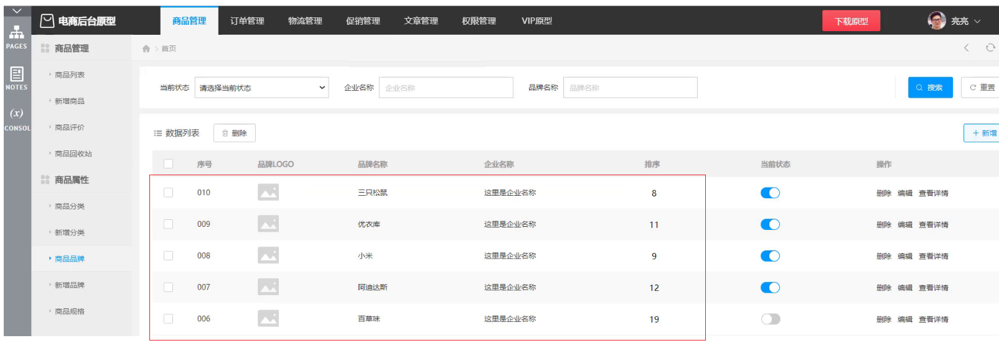
1.2.4 数据库
- 数据库主要负责存储数据。
- 整个Web的访问过程就如下图所示:

(1)浏览器发送一个请求到服务端，去请求所需要的相关资源;
(2)资源分为动态资源和静态资源,动态资源可以是使用Java代码按照Servlet和JSP的规范编写的内容;
(3)在Java代码可以进行业务处理也可以从数据库中读取数据;
(4)拿到数据后，把数据交给HTML页面进行展示,再结合CSS和JavaScript使展示效果更好;
(5)服务端将静态资源响应给浏览器;
(6)浏览器将这些资源进行解析;
(7)解析后将效果展示在浏览器，用户就可以看到最终的结果。
在整个Web的访问过程中，会设计到很多技术，这些技术有已经学习过的，也有还未涉及到的内容，都有哪些还没有涉及到呢?
1.2.5 HTTP协议
- HTTP协议:主要定义通信规则
- 浏览器发送请求给服务器，服务器响应数据给浏览器，这整个过程都需要遵守一定的规则，之前大家学习过TCP、UDP，这些都属于规则，这里我们需要使用的是HTTP协议，这也是一种规则。
1.2.6 Web服务器
- Web服务器:负责解析 HTTP 协议，解析请求数据，并发送响应数据
- 浏览器按照HTTP协议发送请求和数据，后台就需要一个Web服务器软件来根据HTTP协议解析请求和数据，然后把处理结果再按照HTTP协议发送给浏览器
- Web服务器软件有很多，我们课程中将学习的是目前最为常用的==Tomcat==服务器
到这为止，关于JavaWeb中用到的技术栈我们就介绍完了，这里面就只有HTTP协议、Servlet、JSP以及Tomcat这些知识是没有学习过的，所以整个Web核心主要就是来学习这些技术。
1.3 Web核心课程安排

整个Web核心，我们总共有六天的学习内容，分别是:
- 第一天：HTTP、Tomcat、Servlet
- 第二天：Request(请求)、Response(响应)
- 第三天：JSP、会话技术(Cookie、Session)
- 第四天：Filter(过滤器)、Listener(监听器)
- 第五天：Ajax、Vue、ElementUI
- 第六天：综合案例
(1)Request是从客户端向服务端发出的请求对象，
(2)Response是从服务端响应给客户端的结果对象，
(3)JSP是动态网页技术,
(4)会话技术是用来存储客户端和服务端交互所产生的数据，
(5)过滤器是用来拦截客户端的请求,
(6)监听器是用来监听特定事件,
(7)Ajax、Vue、ElementUI都是属于前端技术
这些技术都该如何来使用，我们后面会一个个进行详细的讲解。接下来我们来学习下HTTP、Tomcat和Servlet。
2. HTTP
2.1 简介
HTTP概念
HyperText Transfer Protocol，超文本传输协议，规定了浏览器和服务器之间==数据传输的规则==。
- 数据传输的规则指的是请求数据和响应数据需要按照指定的格式进行传输。
- 如果想知道具体的格式，可以打开浏览器，点击
F12打开开发者工具，点击Network来查看某一次请求的请求数据和响应数据具体的格式内容，如下图所示:

注意:在浏览器中如果看不到上述内容，需要清除浏览器的浏览数据。chrome浏览器可以使用ctrl+shift+Del进行清除。
==所以学习HTTP主要就是学习请求和响应数据的具体格式内容。==
HTTP协议特点
HTTP协议有它自己的一些特点，分别是:
基于TCP协议: 面向连接，安全
TCP是一种面向连接的(建立连接之前是需要经过三次握手)、可靠的、基于字节流的传输层通信协议，在数据传输方面更安全。
基于请求-响应模型的:一次请求对应一次响应
请求和响应是一一对应关系
HTTP协议是无状态协议:对于事物处理没有记忆能力。每次请求-响应都是独立的
无状态指的是客户端发送HTTP请求给服务端之后，服务端根据请求响应数据，响应完后，不会记录任何信息。这种特性有优点也有缺点，
- 缺点:多次请求间不能共享数据
- 优点:速度快
请求之间无法共享数据会引发的问题，如:
- 京东购物，
加入购物车和去购物车结算是两次请求， - HTTP协议的无状态特性，加入购物车请求响应结束后，并未记录加入购物车是何商品
- 发起去购物车结算的请求后，因为无法获取哪些商品加入了购物车，会导致此次请求无法正确展示数据
具体使用的时候，我们发现京东是可以正常展示数据的，原因是Java早已考虑到这个问题，并提出了使用
会话技术(Cookie、Session)来解决这个问题。具体如何来做，我们后面会详细讲到。刚才提到HTTP协议是规定了请求和响应数据的格式，那具体的格式是什么呢?
2.2 请求数据格式
2.2.1 格式介绍
请求数据总共分为三部分内容，分别是==请求行==、==请求头==、==请求体==

请求行: HTTP请求中的第一行数据，请求行包含三块内容，分别是 GET[请求方式] /[请求URL路径] HTTP/1.1[HTTP协议及版本]
请求方式有七种,最常用的是GET和POST
请求头: 第二行开始，格式为key: value形式
请求头中会包含若干个属性，常见的HTTP请求头有:
Host: 表示请求的主机名 User-Agent: 浏览器版本,例如Chrome浏览器的标识类似Mozilla/5.0 ...Chrome/79，IE浏览器的标识类似Mozilla/5.0 (Windows NT ...)like Gecko； Accept：表示浏览器能接收的资源类型，如text/*，image/*或者*/*表示所有； Accept-Language：表示浏览器偏好的语言，服务器可以据此返回不同语言的网页； Accept-Encoding：表示浏览器可以支持的压缩类型，例如gzip, deflate等。==这些数据有什么用处?==
举例说明:服务端可以根据请求头中的内容来获取客户端的相关信息，有了这些信息服务端就可以处理不同的业务需求，比如:
- 不同浏览器解析HTML和CSS标签的结果会有不一致，所以就会导致相同的代码在不同的浏览器会出现不同的效果
- 服务端根据客户端请求头中的数据获取到客户端的浏览器类型，就可以根据不同的浏览器设置不同的代码来达到一致的效果
- 这就是我们常说的浏览器兼容问题
请求体: POST请求的最后一部分，存储请求参数

如上图红线框的内容就是请求体的内容，请求体和请求头之间是有一个空行隔开。此时浏览器发送的是POST请求，为什么不能使用GET呢?这时就需要回顾GET和POST两个请求之间的区别了:
- GET请求请求参数在请求行中，没有请求体，POST请求请求参数在请求体中
- GET请求请求参数大小有限制，POST没有
2.2.2 实例演示
把 代码\http 拷贝到IDEA的工作目录中，比如D:\workspace\web目录，
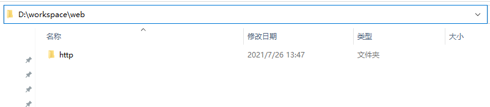
使用IDEA打开

打开后，可以点击项目中的html\19-表单验证.html，使用浏览器打开，通过修改页面中form表单的method属性来测试GET请求和POST请求的参数携带方式。

小结:
请求数据中包含三部分内容，分别是请求行、请求头和请求体
POST请求数据在请求体中，GET请求数据在请求行上
2.3 响应数据格式
2.3.1 格式介绍
响应数据总共分为三部分内容，分别是==响应行==、==响应头==、==响应体==

响应行：响应数据的第一行,响应行包含三块内容，分别是 HTTP/1.1[HTTP协议及版本] 200[响应状态码] ok[状态码的描述]
响应头：第二行开始，格式为key：value形式
响应头中会包含若干个属性，常见的HTTP响应头有:
Content-Type：表示该响应内容的类型，例如text/html，image/jpeg； Content-Length：表示该响应内容的长度（字节数）； Content-Encoding：表示该响应压缩算法，例如gzip； Cache-Control：指示客户端应如何缓存，例如max-age=300表示可以最多缓存300秒响应体： 最后一部分。存放响应数据
上图中…这部分内容就是响应体，它和响应头之间有一个空行隔开。
2.3.2 响应状态码
参考: 资料/1.HTTP/《响应状态码.md》
关于响应状态码，我们先主要认识三个状态码，其余的等后期用到了再去掌握:
- 200 ok 客户端请求成功
- 404 Not Found 请求资源不存在
- 500 Internal Server Error 服务端发生不可预期的错误
2.3.3 自定义服务器
在前面我们导入到IDEA中的http项目中，有一个Server.java类，这里面就是自定义的一个服务器代码，主要使用到的是ServerSocket和Socket
package com.itheima;
import sun.misc.IOUtils;
import java.io.*;
import java.net.ServerSocket;
import java.net.Socket;
import java.nio.charset.StandardCharsets;
import java.nio.file.Files;
/*
自定义服务器
*/
public class Server {
public static void main(String[] args) throws IOException {
ServerSocket ss = new ServerSocket(8080); // 监听指定端口
System.out.println("server is running...");
while (true){
Socket sock = ss.accept();
System.out.println("connected from " + sock.getRemoteSocketAddress());
Thread t = new Handler(sock);
t.start();
}
}
}
class Handler extends Thread {
Socket sock;
public Handler(Socket sock) {
this.sock = sock;
}
public void run() {
try (InputStream input = this.sock.getInputStream()) {
try (OutputStream output = this.sock.getOutputStream()) {
handle(input, output);
}
} catch (Exception e) {
try {
this.sock.close();
} catch (IOException ioe) {
}
System.out.println("client disconnected.");
}
}
private void handle(InputStream input, OutputStream output) throws IOException {
BufferedReader reader = new BufferedReader(new InputStreamReader(input, StandardCharsets.UTF_8));
BufferedWriter writer = new BufferedWriter(new OutputStreamWriter(output, StandardCharsets.UTF_8));
// 读取HTTP请求:
boolean requestOk = false;
String first = reader.readLine();
if (first.startsWith("GET / HTTP/1.")) {
requestOk = true;
}
for (;;) {
String header = reader.readLine();
if (header.isEmpty()) { // 读取到空行时, HTTP Header读取完毕
break;
}
System.out.println(header);
}
System.out.println(requestOk ? "Response OK" : "Response Error");
if (!requestOk) {
// 发送错误响应:
writer.write("HTTP/1.0 404 Not Found\r\n");
writer.write("Content-Length: 0\r\n");
writer.write("\r\n");
writer.flush();
} else {
// 发送成功响应:
//读取html文件，转换为字符串
BufferedReader br = new BufferedReader(new FileReader("http/html/a.html"));
StringBuilder data = new StringBuilder();
String line = null;
while ((line = br.readLine()) != null){
data.append(line);
}
br.close();
int length = data.toString().getBytes(StandardCharsets.UTF_8).length;
writer.write("HTTP/1.1 200 OK\r\n");
writer.write("Connection: keep-alive\r\n");
writer.write("Content-Type: text/html\r\n");
writer.write("Content-Length: " + length + "\r\n");
writer.write("\r\n"); // 空行标识Header和Body的分隔
writer.write(data.toString());
writer.flush();
}
}
}上面代码，大家不需要自己写，主要通过上述代码，只需要大家了解到服务器可以使用java完成编写，是可以接受页面发送的请求和响应数据给前端浏览器的，真正用到的Web服务器，我们不会自己写，都是使用目前比较流行的web服务器，比如==Tomcat==
小结
响应数据中包含三部分内容，分别是响应行、响应头和响应体
掌握200，404，500这三个响应状态码所代表含义，分布是成功、所访问资源不存在和服务的错误
3. Tomcat
3.1 简介
3.1.1 什么是Web服务器
Web服务器是一个应用程序（==软件==），对HTTP协议的操作进行封装，使得程序员不必直接对协议进行操作，让Web开发更加便捷。主要功能是”提供网上信息浏览服务”。

Web服务器是安装在服务器端的一款软件，将来我们把自己写的Web项目部署到Web Tomcat服务器软件中，当Web服务器软件启动后，部署在Web服务器软件中的页面就可以直接通过浏览器来访问了。
Web服务器软件使用步骤
- 准备静态资源
- 下载安装Web服务器软件
- 将静态资源部署到Web服务器上
- 启动Web服务器使用浏览器访问对应的资源
上述内容在演示的时候，使用的是Apache下的Tomcat软件，至于Tomcat软件如何使用，后面会详细的讲到。而对于Web服务器来说，实现的方案有很多，Tomcat只是其中的一种，而除了Tomcat以外，还有很多优秀的Web服务器，比如:

Tomcat就是一款软件，我们主要是以学习如何去使用为主。具体我们会从以下这些方向去学习:
简介: 初步认识下Tomcat
基本使用: 安装、卸载、启动、关闭、配置和项目部署，这些都是对Tomcat的基本操作
IDEA中如何创建Maven Web项目
IDEA中如何使用Tomcat,后面这两个都是我们以后开发经常会用到的方式
首选我们来认识下Tomcat。
Tomcat
Tomcat的相关概念:
Tomcat是Apache软件基金会一个核心项目，是一个开源免费的轻量级Web服务器，支持Servlet/JSP少量JavaEE规范。
概念中提到了JavaEE规范，那什么又是JavaEE规范呢?
JavaEE: Java Enterprise Edition,Java企业版。指Java企业级开发的技术规范总和。包含13项技术规范:JDBC、JNDI、EJB、RMI、JSP、Servlet、XML、JMS、Java IDL、JTS、JTA、JavaMail、JAF。
因为Tomcat支持Servlet/JSP规范，所以Tomcat也被称为Web容器、Servlet容器。Servlet需要依赖Tomcat才能运行。
Tomcat的官网: https://tomcat.apache.org/ 从官网上可以下载对应的版本进行使用。
Tomcat的LOGO

小结
通过这一节的学习，我们需要掌握以下内容:
- Web服务器的作用
封装HTTP协议操作，简化开发
可以将Web项目部署到服务器中，对外提供网上浏览服务
- Tomcat是一个轻量级的Web服务器，支持Servlet/JSP少量JavaEE规范，也称为Web容器，Servlet容器。
3.2 基本使用
Tomcat总共分两部分学习，先来学习Tomcat的基本使用，包括Tomcat的==下载、安装、卸载、启动和关闭==。
3.2.1 下载
直接从官网下载

大家可以自行下载，也可以直接使用资料中已经下载好的资源，
Tomcat的软件程序 资料/2. Tomcat/apache-tomcat-8.5.68-windows-x64.zip
Tomcat的源码 资料/2. Tomcat/tomcat源码/apache-tomcat-8.5.68-src.zip
3.2.2 安装
Tomcat是绿色版,直接解压即可
在D盘的software目录下，将
apache-tomcat-8.5.68-windows-x64.zip进行解压缩，会得到一个apache-tomcat-8.5.68的目录，Tomcat就已经安装成功。==注意==，Tomcat在解压缩的时候，解压所在的目录可以任意，但最好解压到一个不包含中文和空格的目录，因为后期在部署项目的时候，如果路径有中文或者空格可能会导致程序部署失败。
打开
apache-tomcat-8.5.68目录就能看到如下目录结构，每个目录中包含的内容需要认识下,
bin:目录下有两类文件，一种是以
.bat结尾的，是Windows系统的可执行文件，一种是以.sh结尾的，是Linux系统的可执行文件。webapps:就是以后项目部署的目录
到此，Tomcat的安装就已经完成。
3.2.3 卸载
卸载比较简单，可以直接删除目录即可
3.2.4 启动
双击: bin\startup.bat

启动后，通过浏览器访问 http://localhost:8080能看到Apache Tomcat的内容就说明Tomcat已经启动成功。

==注意==: 启动的过程中，控制台有中文乱码，需要修改conf/logging.prooperties

3.2.5 关闭
关闭有三种方式
- 直接x掉运行窗口:强制关闭[不建议]
- bin\shutdown.bat：正常关闭
- ctrl+c： 正常关闭
3.2.6 配置
修改端口
- Tomcat默认的端口是8080，要想修改Tomcat启动的端口号，需要修改 conf/server.xml

注: HTTP协议默认端口号为80，如果将Tomcat端口号改为80，则将来访问Tomcat时，将不用输入端口号。
启动时可能出现的错误
Tomcat的端口号取值范围是0-65535之间任意未被占用的端口，如果设置的端口号被占用，启动的时候就会包如下的错误

Tomcat启动的时候，启动窗口一闪而过: 需要检查JAVA_HOME环境变量是否正确配置

3.2.7 部署
Tomcat部署项目： 将项目放置到webapps目录下，即部署完成。
将
资料/2. Tomcat/hello目录拷贝到Tomcat的webapps目录下通过浏览器访问
http://localhost/hello/a.html，能看到下面的内容就说明项目已经部署成功。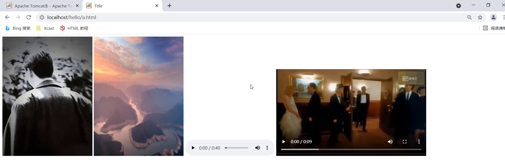
但是呢随着项目的增大，项目中的资源也会越来越多，项目在拷贝的过程中也会越来越费时间，该如何解决呢?
一般JavaWeb项目会被打包称==war==包，然后将war包放到Webapps目录下，Tomcat会自动解压缩war文件
将
资料/2. Tomcat/haha.war目录拷贝到Tomcat的webapps目录下Tomcat检测到war包后会自动完成解压缩，在webapps目录下就会多一个haha目录
通过浏览器访问
http://localhost/haha/a.html，能看到下面的内容就说明项目已经部署成功。
至此，Tomcat的部署就已经完成了，至于如何获得项目对应的war包，后期我们会借助于IDEA工具来生成。
3.3 Maven创建Web项目
介绍完Tomcat的基本使用后，我们来学习在IDEA中如何创建Maven Web项目，学习这种方式的原因是以后Tomcat中运行的绝大多数都是Web项目，而使用Maven工具能更加简单快捷的把Web项目给创建出来，所以Maven的Web项目具体如何来构建呢?
在真正创建Maven Web项目之前，我们先要知道Web项目长什么样子，具体的结构是什么?
3.3.1 Web项目结构
Web项目的结构分为:开发中的项目和开发完可以部署的Web项目,这两种项目的结构是不一样的，我们一个个来介绍下:
Maven Web项目结构: 开发中的项目

开发完成部署的Web项目

- 开发项目通过执行Maven打包命令==package==,可以获取到部署的Web项目目录
- 编译后的Java字节码文件和resources的资源文件，会被放到WEB-INF下的classes目录下
- pom.xml中依赖坐标对应的jar包，会被放入WEB-INF下的lib目录下
3.3.2 创建Maven Web项目
介绍完Maven Web的项目结构后，接下来使用Maven来创建Web项目，创建方式有两种:使用骨架和不使用骨架
使用骨架
具体的步骤包含:
1.创建Maven项目
2.选择使用Web项目骨架
3.输入Maven项目坐标创建项目
4.确认Maven相关的配置信息后，完成项目创建
5.删除pom.xml中多余内容
6.补齐Maven Web项目缺失的目录结构
创建Maven项目

选择使用Web项目骨架
输入Maven项目坐标创建项目

确认Maven相关的配置信息后，完成项目创建

删除pom.xml中多余内容，只留下面的这些内容，注意打包方式 jar和war的区别

补齐Maven Web项目缺失的目录结构，默认没有java和resources目录，需要手动完成创建补齐，最终的目录结果如下

不使用骨架
具体的步骤包含:
1.创建Maven项目
2.选择不使用Web项目骨架
3.输入Maven项目坐标创建项目
4.在pom.xml设置打包方式为war
5.补齐Maven Web项目缺失webapp的目录结构
6.补齐Maven Web项目缺失WEB-INF/web.xml的目录结构
创建Maven项目

选择不使用Web项目骨架
输入Maven项目坐标创建项目

在pom.xml设置打包方式为war,默认是不写代表打包方式为jar

补齐Maven Web项目缺失webapp的目录结构

补齐Maven Web项目缺失WEB-INF/web.xml的目录结构

补充完后，最终的项目结构如下:

上述两种方式，创建的web项目，都不是很全，需要手动补充内容，至于最终采用哪种方式来创建Maven Web项目，都是可以的，根据各自的喜好来选择使用即可。
小结
1.掌握Maven Web项目的目录结构
2.掌握使用骨架的方式创建Maven Web项目

3.掌握不使用骨架的方式创建Maven Web项目

3.4 IDEA使用Tomcat
- Maven Web项目创建成功后，通过Maven的package命令可以将项目打包成war包，将war文件拷贝到Tomcat的webapps目录下，启动Tomcat就可以将项目部署成功，然后通过浏览器进行访问即可。
- 然而我们在开发的过程中，项目中的内容会经常发生变化，如果按照上面这种方式来部署测试，是非常不方便的
- 如何在IDEA中能快速使用Tomcat呢?
在IDEA中集成使用Tomcat有两种方式，分别是==集成本地Tomcat==和==Tomcat Maven插件==
3.4.1 集成本地Tomcat
目标: 将刚才本地安装好的Tomcat8集成到IDEA中，完成项目部署，具体的实现步骤
打开添加本地Tomcat的面板

指定本地Tomcat的具体路径
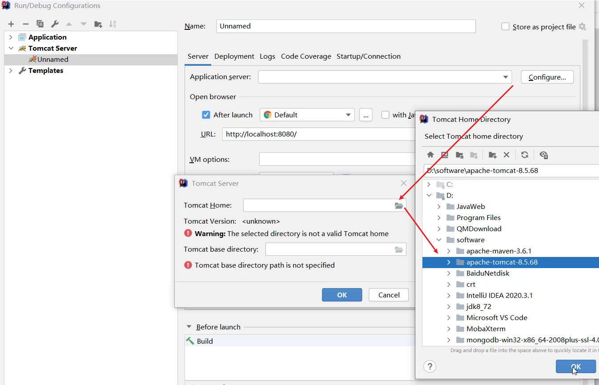
修改Tomcat的名称，此步骤可以不改，只是让名字看起来更有意义，HTTP port中的端口也可以进行修改，比如把8080改成80

将开发项目部署项目到Tomcat中

扩展内容： xxx.war和 xxx.war exploded这两种部署项目模式的区别?
war模式是将WEB工程打成war包，把war包发布到Tomcat服务器上
war exploded模式是将WEB工程以当前文件夹的位置关系发布到Tomcat服务器上
war模式部署成功后，Tomcat的webapps目录下会有部署的项目内容
war exploded模式部署成功后，Tomcat的webapps目录下没有，而使用的是项目的target目录下的内容进行部署
建议大家都选war模式进行部署，更符合项目部署的实际情况
部署成功后，就可以启动项目，为了能更好的看到启动的效果，可以在webapp目录下添加a.html页面

启动成功后，可以通过浏览器进行访问测试

最终的注意事项

至此，IDEA中集成本地Tomcat进行项目部署的内容我们就介绍完了，整体步骤如下，大家需要按照流程进行部署操作练习。

3.4.2 Tomcat Maven插件
在IDEA中使用本地Tomcat进行项目部署，相对来说步骤比较繁琐，所以我们需要一种更简便的方式来替换它，那就是直接使用Maven中的Tomcat插件来部署项目，具体的实现步骤，只需要两步，分别是:
在pom.xml中添加Tomcat插件
<build> <plugins> <!--Tomcat插件 --> <plugin> <groupId>org.apache.tomcat.maven</groupId> <artifactId>tomcat7-maven-plugin</artifactId> <version>2.2</version> </plugin> </plugins> </build>使用Maven Helper插件快速启动项目，选中项目，右键–>Run Maven –> tomcat7:run

==注意:==
- 如果选中项目并右键点击后，看不到Run Maven和Debug Maven，这个时候就需要在IDEA中下载Maven Helper插件，具体的操作方式为: File –> Settings –> Plugins –> Maven Helper —> Install,安装完后按照提示重启IDEA，就可以看到了。

- Maven Tomcat插件目前只有Tomcat7版本，没有更高的版本可以使用
- 使用Maven Tomcat插件，要想修改Tomcat的端口和访问路径，可以直接修改pom.xml
<build>
<plugins>
<!--Tomcat插件 -->
<plugin>
<groupId>org.apache.tomcat.maven</groupId>
<artifactId>tomcat7-maven-plugin</artifactId>
<version>2.2</version>
<configuration>
<port>80</port><!--访问端口号 -->
<!--项目访问路径
未配置访问路径: http://localhost:80/tomcat-demo2/a.html
配置/后访问路径: http://localhost:80/a.html
如果配置成 /hello,访问路径会变成什么?
答案: http://localhost:80/hello/a.html
-->
<path>/</path>
</configuration>
</plugin>
</plugins>
</build>小结
通过这一节的学习，大家要掌握在IDEA中使用Tomcat的两种方式，集成本地Tomcat和使用Maven的Tomcat插件。后者更简单，推荐大家使用，但是如果对于Tomcat的版本有比较高的要求，要在Tomcat7以上，这个时候就只能用前者了。
4. Servlet
4.1 简介

Servlet是JavaWeb最为核心的内容，它是Java提供的一门==动态==web资源开发技术。
使用Servlet就可以实现，根据不同的登录用户在页面上动态显示不同内容。
Servlet是JavaEE规范之一，其实就是一个接口，将来我们需要定义Servlet类实现Servlet接口，并由web服务器运行Servlet

介绍完Servlet是什么以后，接下来我们就按照快速入门->执行流程->生命周期->体系结构->urlPattern配置->XML配置的学习步骤，一步步完成对Servlet的知识学习，首选我们来通过一个入门案例来快速把Servlet用起来。
4.2 快速入门
==需求分析: 编写一个Servlet类，并使用IDEA中Tomcat插件进行部署，最终通过浏览器访问所编写的Servlet程序。==
具体的实现步骤为:
- 创建Web项目
web-demo，导入Servlet依赖坐标
<dependency>
<groupId>javax.servlet</groupId>
<artifactId>javax.servlet-api</artifactId>
<version>3.1.0</version>
<!--
此处为什么需要添加该标签?
provided指的是在编译和测试过程中有效,最后生成的war包时不会加入
因为Tomcat的lib目录中已经有servlet-api这个jar包，如果在生成war包的时候生效就会和Tomcat中的jar包冲突，导致报错
-->
<scope>provided</scope>
</dependency>- 创建:定义一个类，实现Servlet接口，并重写接口中所有方法，并在service方法中输入一句话
package com.itheima.web;
import javax.servlet.*;
import java.io.IOException;
public class ServletDemo1 implements Servlet {
public void service(ServletRequest servletRequest, ServletResponse servletResponse) throws ServletException, IOException {
System.out.println("servlet hello world~");
}
public void init(ServletConfig servletConfig) throws ServletException {
}
public ServletConfig getServletConfig() {
return null;
}
public String getServletInfo() {
return null;
}
public void destroy() {
}
}- 配置:在类上使用@WebServlet注解，配置该Servlet的访问路径
@WebServlet("/demo1")- 访问:启动Tomcat,浏览器中输入URL地址访问该Servlet
http://localhost:8080/web-demo/demo1- 器访问后，在控制台会打印
servlet hello world~说明servlet程序已经成功运行。
至此，Servlet的入门案例就已经完成，大家可以按照上面的步骤进行练习了。
4.3 执行流程
Servlet程序已经能正常运行，但是我们需要思考个问题: 我们并没有创建ServletDemo1类的对象，也没有调用对象中的service方法，为什么在控制台就打印了servlet hello world~这句话呢?
要想回答上述问题，我们就需要对Servlet的执行流程进行一个学习。

- 浏览器发出
http://localhost:8080/web-demo/demo1请求，从请求中可以解析出三部分内容，分别是localhost:8080、web-demo、demo1- 根据
localhost:8080可以找到要访问的Tomcat Web服务器 - 根据
web-demo可以找到部署在Tomcat服务器上的web-demo项目 - 根据
demo1可以找到要访问的是项目中的哪个Servlet类，根据@WebServlet后面的值进行匹配
- 根据
- 找到ServletDemo1这个类后，Tomcat Web服务器就会为ServletDemo1这个类创建一个对象，然后调用对象中的service方法
- ServletDemo1实现了Servlet接口，所以类中必然会重写service方法供Tomcat Web服务器进行调用
- service方法中有ServletRequest和ServletResponse两个参数，ServletRequest封装的是请求数据，ServletResponse封装的是响应数据，后期我们可以通过这两个参数实现前后端的数据交互
小结
介绍完Servlet的执行流程，需要大家掌握两个问题：
- Servlet由谁创建?Servlet方法由谁调用?
Servlet由web服务器创建，Servlet方法由web服务器调用
- 服务器怎么知道Servlet中一定有service方法?
因为我们自定义的Servlet,必须实现Servlet接口并复写其方法，而Servlet接口中有service方法
4.4 生命周期
介绍完Servlet的执行流程后，我们知道Servlet是由Tomcat Web服务器帮我们创建的。
接下来咱们再来思考一个问题:==Tomcat什么时候创建的Servlet对象?==
要想回答上述问题，我们就需要对Servlet的生命周期进行一个学习。
生命周期: 对象的生命周期指一个对象从被创建到被销毁的整个过程。
Servlet运行在Servlet容器(web服务器)中，其生命周期由容器来管理，分为4个阶段：
- ==加载和实例化==：默认情况下，当Servlet第一次被访问时，由容器创建Servlet对象
默认情况，Servlet会在第一次访问被容器创建，但是如果创建Servlet比较耗时的话，那么第一个访问的人等待的时间就比较长，用户的体验就比较差，那么我们能不能把Servlet的创建放到服务器启动的时候来创建，具体如何来配置? @WebServlet(urlPatterns = "/demo1",loadOnStartup = 1) loadOnstartup的取值有两类情况 （1）负整数:第一次访问时创建Servlet对象 （2）0或正整数:服务器启动时创建Servlet对象，数字越小优先级越高- ==初始化==：在Servlet实例化之后，容器将调用Servlet的==init()==方法初始化这个对象，完成一些如加载配置文件、创建连接等初始化的工作。该方法只==调用一次==
- ==请求处理==：==每次==请求Servlet时，Servlet容器都会调用Servlet的==service()==方法对请求进行处理
- ==服务终止==：当需要释放内存或者容器关闭时，容器就会调用Servlet实例的==destroy()==方法完成资源的释放。在destroy()方法调用之后，容器会释放这个Servlet实例，该实例随后会被Java的垃圾收集器所回收
通过案例演示下上述的生命周期
package com.itheima.web; import javax.servlet.*; import javax.servlet.annotation.WebServlet; import java.io.IOException; /** * Servlet生命周期方法 */ @WebServlet(urlPatterns = "/demo2",loadOnStartup = 1) public class ServletDemo2 implements Servlet { /** * 初始化方法 * 1.调用时机：默认情况下，Servlet被第一次访问时，调用 * * loadOnStartup: 默认为-1，修改为0或者正整数，则会在服务器启动的时候，调用 * 2.调用次数: 1次 * @param config * @throws ServletException */ public void init(ServletConfig config) throws ServletException { System.out.println("init..."); } /** * 提供服务 * 1.调用时机:每一次Servlet被访问时，调用 * 2.调用次数: 多次 * @param req * @param res * @throws ServletException * @throws IOException */ public void service(ServletRequest req, ServletResponse res) throws ServletException, IOException { System.out.println("servlet hello world~"); } /** * 销毁方法 * 1.调用时机：内存释放或者服务器关闭的时候，Servlet对象会被销毁，调用 * 2.调用次数: 1次 */ public void destroy() { System.out.println("destroy..."); } public ServletConfig getServletConfig() { return null; } public String getServletInfo() { return null; } }==注意:如何才能让Servlet中的destroy方法被执行？==

在Terminal命令行中，先使用mvn tomcat7:run启动，然后再使用ctrl+c关闭tomcat
小结
这节中需要掌握的内容是:
- Servlet对象在什么时候被创建的?
默认是第一次访问的时候被创建，可以使用@WebServlet(urlPatterns = “/demo2”,loadOnStartup = 1)的loadOnStartup 修改成在服务器启动的时候创建。
- Servlet生命周期中涉及到的三个方法，这三个方法是什么?什么时候被调用?调用几次?
涉及到三个方法，分别是 init()、service()、destroy()
init方法在Servlet对象被创建的时候执行，只执行1次
service方法在Servlet被访问的时候调用，每访问1次就调用1次
destroy方法在Servlet对象被销毁的时候调用，只执行1次
4.5 方法介绍
Servlet中总共有5个方法，我们已经介绍过其中的三个，剩下的两个方法作用分别是什么？
我们先来回顾下前面讲的三个方法，分别是:
- 初始化方法，在Servlet被创建时执行，只执行一次
void init(ServletConfig config) - 提供服务方法， 每次Servlet被访问，都会调用该方法
void service(ServletRequest req, ServletResponse res)- 销毁方法，当Servlet被销毁时，调用该方法。在内存释放或服务器关闭时销毁Servlet
void destroy() 剩下的两个方法是:
- 获取Servlet信息
String getServletInfo()
//该方法用来返回Servlet的相关信息，没有什么太大的用处，一般我们返回一个空字符串即可
public String getServletInfo() {
return "";
}- 获取ServletConfig对象
ServletConfig getServletConfig()ServletConfig对象，在init方法的参数中有，而Tomcat Web服务器在创建Servlet对象的时候会调用init方法，必定会传入一个ServletConfig对象，我们只需要将服务器传过来的ServletConfig进行返回即可。具体如何操作?
package com.itheima.web;
import javax.servlet.*;
import javax.servlet.annotation.WebServlet;
import java.io.IOException;
/**
* Servlet方法介绍
*/
@WebServlet(urlPatterns = "/demo3",loadOnStartup = 1)
public class ServletDemo3 implements Servlet {
private ServletConfig servletConfig;
/**
* 初始化方法
* 1.调用时机：默认情况下，Servlet被第一次访问时，调用
* * loadOnStartup: 默认为-1，修改为0或者正整数，则会在服务器启动的时候，调用
* 2.调用次数: 1次
* @param config
* @throws ServletException
*/
public void init(ServletConfig config) throws ServletException {
this.servletConfig = config;
System.out.println("init...");
}
public ServletConfig getServletConfig() {
return servletConfig;
}
/**
* 提供服务
* 1.调用时机:每一次Servlet被访问时，调用
* 2.调用次数: 多次
* @param req
* @param res
* @throws ServletException
* @throws IOException
*/
public void service(ServletRequest req, ServletResponse res) throws ServletException, IOException {
System.out.println("servlet hello world~");
}
/**
* 销毁方法
* 1.调用时机：内存释放或者服务器关闭的时候，Servlet对象会被销毁，调用
* 2.调用次数: 1次
*/
public void destroy() {
System.out.println("destroy...");
}
public String getServletInfo() {
return "";
}
}getServletInfo()和getServletConfig()这两个方法使用的不是很多，大家了解下。
4.6 体系结构
通过上面的学习，我们知道要想编写一个Servlet就必须要实现Servlet接口，重写接口中的5个方法，虽然已经能完成要求，但是编写起来还是比较麻烦的，因为我们更关注的其实只有service方法，那有没有更简单方式来创建Servlet呢?
要想解决上面的问题，我们需要先对Servlet的体系结构进行下了解:

因为我们将来开发B/S架构的web项目，都是针对HTTP协议，所以我们自定义Servlet,会通过继承==HttpServlet==
具体的编写格式如下:
@WebServlet("/demo4")
public class ServletDemo4 extends HttpServlet {
@Override
protected void doGet(HttpServletRequest req, HttpServletResponse resp) throws ServletException, IOException {
//TODO GET 请求方式处理逻辑
System.out.println("get...");
}
@Override
protected void doPost(HttpServletRequest req, HttpServletResponse resp) throws ServletException, IOException {
//TODO Post 请求方式处理逻辑
System.out.println("post...");
}
}- 要想发送一个GET请求，请求该Servlet，只需要通过浏览器发送
http://localhost:8080/web-demo/demo4,就能看到doGet方法被执行了 - 要想发送一个POST请求，请求该Servlet，单单通过浏览器是无法实现的，这个时候就需要编写一个form表单来发送请求，在webapp下创建一个
a.html页面，内容如下:
<!DOCTYPE html>
<html lang="en">
<head>
<meta charset="UTF-8">
<title>Title</title>
</head>
<body>
<form action="/web-demo/demo4" method="post">
<input name="username"/><input type="submit"/>
</form>
</body>
</html>启动测试，即可看到doPost方法被执行了。
Servlet的简化编写就介绍完了，接着需要思考两个问题:
- HttpServlet中为什么要根据请求方式的不同，调用不同的方法?
- 如何调用?
针对问题一，我们需要回顾之前的知识点==前端发送GET和POST请求的时候，参数的位置不一致，GET请求参数在请求行中，POST请求参数在请求体中==，为了能处理不同的请求方式，我们得在service方法中进行判断，然后写不同的业务处理，这样能实现，但是每个Servlet类中都将有相似的代码，针对这个问题，有什么可以优化的策略么?
package com.itheima.web;
import javax.servlet.*;
import javax.servlet.annotation.WebServlet;
import javax.servlet.http.HttpServlet;
import javax.servlet.http.HttpServletRequest;
import javax.servlet.http.HttpServletResponse;
import java.io.IOException;
@WebServlet("/demo5")
public class ServletDemo5 implements Servlet {
public void init(ServletConfig config) throws ServletException {
}
public ServletConfig getServletConfig() {
return null;
}
public void service(ServletRequest req, ServletResponse res) throws ServletException, IOException {
//如何调用?
//获取请求方式，根据不同的请求方式进行不同的业务处理
HttpServletRequest request = (HttpServletRequest)req;
//1. 获取请求方式
String method = request.getMethod();
//2. 判断
if("GET".equals(method)){
// get方式的处理逻辑
}else if("POST".equals(method)){
// post方式的处理逻辑
}
}
public String getServletInfo() {
return null;
}
public void destroy() {
}
}
要解决上述问题，我们可以对Servlet接口进行继承封装，来简化代码开发。
package com.itheima.web;
import javax.servlet.*;
import javax.servlet.http.HttpServletRequest;
import java.io.IOException;
public class MyHttpServlet implements Servlet {
public void init(ServletConfig config) throws ServletException {
}
public ServletConfig getServletConfig() {
return null;
}
public void service(ServletRequest req, ServletResponse res) throws ServletException, IOException {
HttpServletRequest request = (HttpServletRequest)req;
//1. 获取请求方式
String method = request.getMethod();
//2. 判断
if("GET".equals(method)){
// get方式的处理逻辑
doGet(req,res);
}else if("POST".equals(method)){
// post方式的处理逻辑
doPost(req,res);
}
}
protected void doPost(ServletRequest req, ServletResponse res) {
}
protected void doGet(ServletRequest req, ServletResponse res) {
}
public String getServletInfo() {
return null;
}
public void destroy() {
}
}
有了MyHttpServlet这个类，以后我们再编写Servlet类的时候，只需要继承MyHttpServlet，重写父类中的doGet和doPost方法，就可以用来处理GET和POST请求的业务逻辑。接下来，可以把ServletDemo5代码进行改造
@WebServlet("/demo5")
public class ServletDemo5 extends MyHttpServlet {
@Override
protected void doGet(ServletRequest req, ServletResponse res) {
System.out.println("get...");
}
@Override
protected void doPost(ServletRequest req, ServletResponse res) {
System.out.println("post...");
}
}
将来页面发送的是GET请求，则会进入到doGet方法中进行执行，如果是POST请求，则进入到doPost方法。这样代码在编写的时候就相对来说更加简单快捷。
类似MyHttpServlet这样的类Servlet中已经为我们提供好了，就是HttpServlet,翻开源码，大家可以搜索service()方法，你会发现HttpServlet做的事更多，不仅可以处理GET和POST还可以处理其他五种请求方式。
protected void service(HttpServletRequest req, HttpServletResponse resp)
throws ServletException, IOException
{
String method = req.getMethod();
if (method.equals(METHOD_GET)) {
long lastModified = getLastModified(req);
if (lastModified == -1) {
// servlet doesn't support if-modified-since, no reason
// to go through further expensive logic
doGet(req, resp);
} else {
long ifModifiedSince = req.getDateHeader(HEADER_IFMODSINCE);
if (ifModifiedSince < lastModified) {
// If the servlet mod time is later, call doGet()
// Round down to the nearest second for a proper compare
// A ifModifiedSince of -1 will always be less
maybeSetLastModified(resp, lastModified);
doGet(req, resp);
} else {
resp.setStatus(HttpServletResponse.SC_NOT_MODIFIED);
}
}
} else if (method.equals(METHOD_HEAD)) {
long lastModified = getLastModified(req);
maybeSetLastModified(resp, lastModified);
doHead(req, resp);
} else if (method.equals(METHOD_POST)) {
doPost(req, resp);
} else if (method.equals(METHOD_PUT)) {
doPut(req, resp);
} else if (method.equals(METHOD_DELETE)) {
doDelete(req, resp);
} else if (method.equals(METHOD_OPTIONS)) {
doOptions(req,resp);
} else if (method.equals(METHOD_TRACE)) {
doTrace(req,resp);
} else {
//
// Note that this means NO servlet supports whatever
// method was requested, anywhere on this server.
//
String errMsg = lStrings.getString("http.method_not_implemented");
Object[] errArgs = new Object[1];
errArgs[0] = method;
errMsg = MessageFormat.format(errMsg, errArgs);
resp.sendError(HttpServletResponse.SC_NOT_IMPLEMENTED, errMsg);
}
}小结
通过这一节的学习，要掌握:
- HttpServlet的使用步骤
继承HttpServlet
重写doGet和doPost方法
- HttpServlet原理
获取请求方式，并根据不同的请求方式，调用不同的doXxx方法
4.7 urlPattern配置
Servlet类编写好后，要想被访问到，就需要配置其访问路径（==urlPattern==）
一个Servlet,可以配置多个urlPattern

package com.itheima.web; import javax.servlet.ServletRequest; import javax.servlet.ServletResponse; import javax.servlet.annotation.WebServlet; /** * urlPattern: 一个Servlet可以配置多个访问路径 */ @WebServlet(urlPatterns = {"/demo7","/demo8"}) public class ServletDemo7 extends MyHttpServlet { @Override protected void doGet(ServletRequest req, ServletResponse res) { System.out.println("demo7 get..."); } @Override protected void doPost(ServletRequest req, ServletResponse res) { } }在浏览器上输入
http://localhost:8080/web-demo/demo7,http://localhost:8080/web-demo/demo8这两个地址都能访问到ServletDemo7的doGet方法。==urlPattern配置规则==
精确匹配

/** * UrlPattern: * * 精确匹配 */ @WebServlet(urlPatterns = "/user/select") public class ServletDemo8 extends MyHttpServlet { @Override protected void doGet(ServletRequest req, ServletResponse res) { System.out.println("demo8 get..."); } @Override protected void doPost(ServletRequest req, ServletResponse res) { } }访问路径
http://localhost:8080/web-demo/user/select目录匹配

package com.itheima.web; import javax.servlet.ServletRequest; import javax.servlet.ServletResponse; import javax.servlet.annotation.WebServlet; /** * UrlPattern: * * 目录匹配: /user/* */ @WebServlet(urlPatterns = "/user/*") public class ServletDemo9 extends MyHttpServlet { @Override protected void doGet(ServletRequest req, ServletResponse res) { System.out.println("demo9 get..."); } @Override protected void doPost(ServletRequest req, ServletResponse res) { } }访问路径
http://localhost:8080/web-demo/user/任意==思考:==
- 访问路径
http://localhost:8080/web-demo/user是否能访问到demo9的doGet方法? - 访问路径
http://localhost:8080/web-demo/user/a/b是否能访问到demo9的doGet方法? - 访问路径
http://localhost:8080/web-demo/user/select是否能访问到demo9还是demo8的doGet方法?
答案是: 能、能、demo8，进而我们可以得到的结论是
/user/*中的/*代表的是零或多个层级访问目录同时精确匹配优先级要高于目录匹配。- 访问路径
扩展名匹配

package com.itheima.web; import javax.servlet.ServletRequest; import javax.servlet.ServletResponse; import javax.servlet.annotation.WebServlet; /** * UrlPattern: * * 扩展名匹配: *.do */ @WebServlet(urlPatterns = "*.do") public class ServletDemo10 extends MyHttpServlet { @Override protected void doGet(ServletRequest req, ServletResponse res) { System.out.println("demo10 get..."); } @Override protected void doPost(ServletRequest req, ServletResponse res) { } }访问路径
http://localhost:8080/web-demo/任意.do==注意==:
- 如果路径配置的不是扩展名，那么在路径的前面就必须要加
/否则会报错

- 如果路径配置的是
*.do,那么在*.do的前面不能加/,否则会报错

- 如果路径配置的不是扩展名，那么在路径的前面就必须要加
任意匹配

package com.itheima.web; import javax.servlet.ServletRequest; import javax.servlet.ServletResponse; import javax.servlet.annotation.WebServlet; /** * UrlPattern: * * 任意匹配： / */ @WebServlet(urlPatterns = "/") public class ServletDemo11 extends MyHttpServlet { @Override protected void doGet(ServletRequest req, ServletResponse res) { System.out.println("demo11 get..."); } @Override protected void doPost(ServletRequest req, ServletResponse res) { } }访问路径
http://localhost:8080/demo-web/任意package com.itheima.web; import javax.servlet.ServletRequest; import javax.servlet.ServletResponse; import javax.servlet.annotation.WebServlet; /** * UrlPattern: * * 任意匹配： /* */ @WebServlet(urlPatterns = "/*") public class ServletDemo12 extends MyHttpServlet { @Override protected void doGet(ServletRequest req, ServletResponse res) { System.out.println("demo12 get..."); } @Override protected void doPost(ServletRequest req, ServletResponse res) { } }访问路径`http://localhost:8080/demo-web/任意
==注意:==
/和/*的区别?当我们的项目中的Servlet配置了 “/“,会覆盖掉tomcat中的DefaultServlet,当其他的url-pattern都匹配不上时都会走这个Servlet
当我们的项目中配置了”/*”,意味着匹配任意访问路径
DefaultServlet是用来处理静态资源，如果配置了”/“会把默认的覆盖掉，就会引发请求静态资源的时候没有走默认的而是走了自定义的Servlet类，最终导致静态资源不能被访问
小结
urlPattern总共有四种配置方式，分别是精确匹配、目录匹配、扩展名匹配、任意匹配
五种配置的优先级为 精确匹配 > 目录匹配> 扩展名匹配 > /* > / ,无需记，以最终运行结果为准。
4.8 XML配置
前面对应Servlet的配置，我们都使用的是@WebServlet,这个是Servlet从3.0版本后开始支持注解配置，3.0版本前只支持XML配置文件的配置方法。
对于XML的配置步骤有两步:
- 编写Servlet类
package com.itheima.web;
import javax.servlet.ServletRequest;
import javax.servlet.ServletResponse;
import javax.servlet.annotation.WebServlet;
public class ServletDemo13 extends MyHttpServlet {
@Override
protected void doGet(ServletRequest req, ServletResponse res) {
System.out.println("demo13 get...");
}
@Override
protected void doPost(ServletRequest req, ServletResponse res) {
}
}- 在web.xml中配置该Servlet
<?xml version="1.0" encoding="UTF-8"?>
<web-app xmlns="http://xmlns.jcp.org/xml/ns/javaee"
xmlns:xsi="http://www.w3.org/2001/XMLSchema-instance"
xsi:schemaLocation="http://xmlns.jcp.org/xml/ns/javaee http://xmlns.jcp.org/xml/ns/javaee/web-app_4_0.xsd"
version="4.0">
<!--
Servlet 全类名
-->
<servlet>
<!-- servlet的名称，名字任意-->
<servlet-name>demo13</servlet-name>
<!--servlet的类全名-->
<servlet-class>com.itheima.web.ServletDemo13</servlet-class>
</servlet>
<!--
Servlet 访问路径
-->
<servlet-mapping>
<!-- servlet的名称，要和上面的名称一致-->
<servlet-name>demo13</servlet-name>
<!-- servlet的访问路径-->
<url-pattern>/demo13</url-pattern>
</servlet-mapping>
</web-app>这种配置方式和注解比起来，确认麻烦很多，所以建议大家使用注解来开发。但是大家要认识上面这种配置方式，因为并不是所有的项目都是基于注解开发的。
5. Request&Response
今日目标
- 掌握Request对象的概念与使用
- 掌握Response对象的概念与使用
- 能够完成用户登录注册案例的实现
- 能够完成SqlSessionFactory工具类的抽取
1. Request和Response的概述
==Request是请求对象，Response是响应对象。==这两个对象在我们使用Servlet的时候有看到：
此时，我们就需要思考一个问题request和response这两个参数的作用是什么?

- request:==获取==请求数据
- 浏览器会发送HTTP请求到后台服务器[Tomcat]
- HTTP的请求中会包含很多请求数据[请求行+请求头+请求体]
- 后台服务器[Tomcat]会对HTTP请求中的数据进行解析并把解析结果存入到一个对象中
- 所存入的对象即为request对象，所以我们可以从request对象中获取请求的相关参数
- 获取到数据后就可以继续后续的业务，比如获取用户名和密码就可以实现登录操作的相关业务
- response:==设置==响应数据
- 业务处理完后，后台就需要给前端返回业务处理的结果即响应数据
- 把响应数据封装到response对象中
- 后台服务器[Tomcat]会解析response对象,按照[响应行+响应头+响应体]格式拼接结果
- 浏览器最终解析结果，把内容展示在浏览器给用户浏览
对于上述所讲的内容，我们通过一个案例来初步体验下request和response对象的使用。
@WebServlet("/demo3")
public class ServletDemo3 extends HttpServlet {
@Override
protected void doGet(HttpServletRequest request, HttpServletResponse response) throws ServletException, IOException {
//使用request对象 获取请求数据
String name = request.getParameter("name");//url?name=zhangsan
//使用response对象 设置响应数据
response.setHeader("content-type","text/html;charset=utf-8");
response.getWriter().write("<h1>"+name+",欢迎您！</h1>");
}
@Override
protected void doPost(HttpServletRequest request, HttpServletResponse response) throws ServletException, IOException {
System.out.println("Post...");
}
}启动成功后就可以通过浏览器来访问，并且根据传入参数的不同就可以在页面上展示不同的内容:

小结
在这节中，我们主要认识了下request对象和reponse对象:
- request对象是用来封装请求数据的对象
- response对象是用来封装响应数据的对象
目前我们只知道这两个对象是用来干什么的，那么它们具体是如何实现的，就需要我们继续深入的学习。接下来，就先从Request对象来学习,主要学习下面这些内容:
request继承体系
request获取请求参数
request请求转发
2. Request对象
2.1 Request继承体系
在学习这节内容之前，我们先思考一个问题，前面在介绍Request和Reponse对象的时候，比较细心的同学可能已经发现：
- 当我们的Servlet类实现的是Servlet接口的时候，service方法中的参数是ServletRequest和ServletResponse
- 当我们的Servlet类继承的是HttpServlet类的时候，doGet和doPost方法中的参数就变成HttpServletRequest和HttpServletReponse
那么，
- ServletRequest和HttpServletRequest的关系是什么?
- request对象是有谁来创建的?
- request提供了哪些API,这些API从哪里查?
首先，我们先来看下Request的继承体系:

从上图中可以看出，ServletRequest和HttpServletRequest都是Java提供的，所以我们可以打开JavaEE提供的API文档[参考: 资料/JavaEE7-api.chm],打开后可以看到:

所以ServletRequest和HttpServletRequest是继承关系，并且两个都是接口，接口是无法创建对象，这个时候就引发了下面这个问题:
这个时候，我们就需要用到Request继承体系中的RequestFacade:
- 该类实现了HttpServletRequest接口，也间接实现了ServletRequest接口。
- Servlet类中的service方法、doGet方法或者是doPost方法最终都是由Web服务器[Tomcat]来调用的，所以Tomcat提供了方法参数接口的具体实现类，并完成了对象的创建
- 要想了解RequestFacade中都提供了哪些方法，我们可以直接查看JavaEE的API文档中关于ServletRequest和HttpServletRequest的接口文档，因为RequestFacade实现了其接口就需要重写接口中的方法
对于上述结论，要想验证，可以编写一个Servlet，在方法中把request对象打印下，就能看到最终的对象是不是RequestFacade,代码如下:
@WebServlet("/demo2")
public class ServletDemo2 extends HttpServlet {
@Override
protected void doGet(HttpServletRequest request, HttpServletResponse response) throws ServletException, IOException {
System.out.println(request);
}
@Override
protected void doPost(HttpServletRequest request, HttpServletResponse response) throws ServletException, IOException {
}
}启动服务器，运行访问http://localhost:8080/request-demo/demo2,得到运行结果:
小结
- Request的继承体系为ServletRequest–>HttpServletRequest–>RequestFacade
- Tomcat需要解析请求数据，封装为request对象,并且创建request对象传递到service方法
- 使用request对象，可以查阅JavaEE API文档的HttpServletRequest接口中方法说明
2.2 Request获取请求数据
HTTP请求数据总共分为三部分内容，分别是==请求行、请求头、请求体==，对于这三部分内容的数据，分别该如何获取，首先我们先来学习请求行数据如何获取?
2.2.1 获取请求行数据
请求行包含三块内容，分别是请求方式、请求资源路径、HTTP协议及版本

对于这三部分内容，request对象都提供了对应的API方法来获取，具体如下:
- 获取请求方式:
GET
String getMethod()- 获取虚拟目录(项目访问路径):
/request-demo
String getContextPath()- 获取URL(统一资源定位符):
http://localhost:8080/request-demo/req1
StringBuffer getRequestURL()- 获取URI(统一资源标识符):
/request-demo/req1
String getRequestURI()- 获取请求参数(GET方式):
username=zhangsan&password=123
String getQueryString()介绍完上述方法后，咱们通过代码把上述方法都使用下:
/**
* request 获取请求数据
*/
@WebServlet("/req1")
public class RequestDemo1 extends HttpServlet {
@Override
protected void doGet(HttpServletRequest req, HttpServletResponse resp) throws ServletException, IOException {
// String getMethod()：获取请求方式： GET
String method = req.getMethod();
System.out.println(method);//GET
// String getContextPath()：获取虚拟目录(项目访问路径)：/request-demo
String contextPath = req.getContextPath();
System.out.println(contextPath);
// StringBuffer getRequestURL(): 获取URL(统一资源定位符)：http://localhost:8080/request-demo/req1
StringBuffer url = req.getRequestURL();
System.out.println(url.toString());
// String getRequestURI()：获取URI(统一资源标识符)： /request-demo/req1
String uri = req.getRequestURI();
System.out.println(uri);
// String getQueryString()：获取请求参数（GET方式）： username=zhangsan
String queryString = req.getQueryString();
System.out.println(queryString);
}
@Override
protected void doPost(HttpServletRequest req, HttpServletResponse resp) throws ServletException, IOException {
}
}启动服务器，访问http://localhost:8080/request-demo/req1?username=zhangsan&passwrod=123，获取的结果如下:

2.2.2 获取请求头数据
对于请求头的数据，格式为key: value如下:
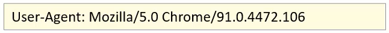
所以根据请求头名称获取对应值的方法为:
String getHeader(String name)接下来，在代码中如果想要获取客户端浏览器的版本信息，则可以使用
/**
* request 获取请求数据
*/
@WebServlet("/req1")
public class RequestDemo1 extends HttpServlet {
@Override
protected void doGet(HttpServletRequest req, HttpServletResponse resp) throws ServletException, IOException {
//获取请求头: user-agent: 浏览器的版本信息
String agent = req.getHeader("user-agent");
System.out.println(agent);
}
@Override
protected void doPost(HttpServletRequest req, HttpServletResponse resp) throws ServletException, IOException {
}
}
重新启动服务器后，http://localhost:8080/request-demo/req1?username=zhangsan&passwrod=123，获取的结果如下:
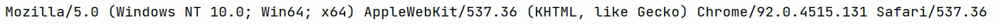
2.2.3 获取请求体数据
浏览器在发送GET请求的时候是没有请求体的，所以需要把请求方式变更为POST，请求体中的数据格式如下:
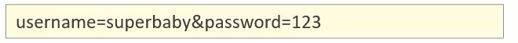
对于请求体中的数据，Request对象提供了如下两种方式来获取其中的数据，分别是:
- 获取字节输入流，如果前端发送的是字节数据，比如传递的是文件数据，则使用该方法
ServletInputStream getInputStream()
该方法可以获取字节- 获取字符输入流，如果前端发送的是纯文本数据，则使用该方法
BufferedReader getReader()接下来，大家需要思考，要想获取到请求体的内容该如何实现?
具体实现的步骤如下:
1.准备一个页面，在页面中添加form表单,用来发送post请求
2.在Servlet的doPost方法中获取请求体数据
3.在doPost方法中使用request的getReader()或者getInputStream()来获取
4.访问测试
- 在项目的webapp目录下添加一个html页面，名称为：
req.html
<!DOCTYPE html>
<html lang="en">
<head>
<meta charset="UTF-8">
<title>Title</title>
</head>
<body>
<!--
action:form表单提交的请求地址
method:请求方式，指定为post
-->
<form action="/request-demo/req1" method="post">
<input type="text" name="username">
<input type="password" name="password">
<input type="submit">
</form>
</body>
</html>- 在Servlet的doPost方法中获取数据
/**
* request 获取请求数据
*/
@WebServlet("/req1")
public class RequestDemo1 extends HttpServlet {
@Override
protected void doGet(HttpServletRequest req, HttpServletResponse resp) throws ServletException, IOException {
}
@Override
protected void doPost(HttpServletRequest req, HttpServletResponse resp) throws ServletException, IOException {
//在此处获取请求体中的数据
}
}- 调用getReader()或者getInputStream()方法，因为目前前端传递的是纯文本数据，所以我们采用getReader()方法来获取
/**
* request 获取请求数据
*/
@WebServlet("/req1")
public class RequestDemo1 extends HttpServlet {
@Override
protected void doGet(HttpServletRequest req, HttpServletResponse resp) throws ServletException, IOException {
}
@Override
protected void doPost(HttpServletRequest req, HttpServletResponse resp) throws ServletException, IOException {
//获取post 请求体：请求参数
//1. 获取字符输入流
BufferedReader br = req.getReader();
//2. 读取数据
String line = br.readLine();
System.out.println(line);
}
}==注意==
BufferedReader流是通过request对象来获取的，当请求完成后request对象就会被销毁，request对象被销毁后，BufferedReader流就会自动关闭，所以此处就不需要手动关闭流了。
- 启动服务器，通过浏览器访问
http://localhost:8080/request-demo/req.html
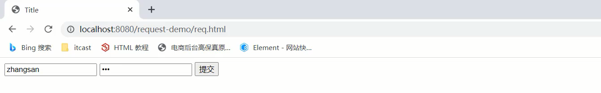
点击提交按钮后，就可以在控制台看到前端所发送的请求数据

小结
HTTP请求数据中包含了请求行、请求头和请求体，针对这三部分内容，Request对象都提供了对应的API方法来获取对应的值:
- 请求行
- getMethod()获取请求方式
- getContextPath()获取项目访问路径
- getRequestURL()获取请求URL
- getRequestURI()获取请求URI
- getQueryString()获取GET请求方式的请求参数
- 请求头
- getHeader(String name)根据请求头名称获取其对应的值
- 请求体
- 注意: ==浏览器发送的POST请求才有请求体==
- 如果是纯文本数据:getReader()
- 如果是字节数据如文件数据:getInputStream()
2.2.4 获取请求参数的通用方式
在学习下面内容之前，我们先提出两个问题:
- 什么是请求参数?
- 请求参数和请求数据的关系是什么?
1.什么是请求参数?
为了能更好的回答上述两个问题，我们拿用户登录的例子来说明
1.1 想要登录网址，需要进入登录页面
1.2 在登录页面输入用户名和密码
1.3 将用户名和密码提交到后台
1.4 后台校验用户名和密码是否正确
1.5 如果正确，则正常登录，如果不正确，则提示用户名或密码错误
上述例子中，用户名和密码其实就是我们所说的请求参数。
2.什么是请求数据?
请求数据则是包含请求行、请求头和请求体的所有数据
3.请求参数和请求数据的关系是什么?
3.1 请求参数是请求数据中的部分内容
3.2 如果是GET请求，请求参数在请求行中
3.3 如果是POST请求，请求参数一般在请求体中
对于请求参数的获取,常用的有以下两种:
- GET方式:
String getQueryString()- POST方式:
BufferedReader getReader();有了上述的知识储备，我们来实现一个案例需求:
（1）发送一个GET请求并携带用户名，后台接收后打印到控制台
（2）发送一个POST请求并携带用户名，后台接收后打印到控制台
此处大家需要注意的是GET请求和POST请求接收参数的方式不一样，具体实现的代码如下:
@WebServlet("/req1")
public class RequestDemo1 extends HttpServlet {
@Override
protected void doGet(HttpServletRequest req, HttpServletResponse resp) throws ServletException, IOException {
String result = req.getQueryString();
System.out.println(result);
}
@Override
protected void doPost(HttpServletRequest req, HttpServletResponse resp) throws ServletException, IOException {
BufferedReader br = req.getReader();
String result = br.readLine();
System.out.println(result);
}
}- 对于上述的代码，会存在什么问题呢?

- 如何解决上述重复代码的问题呢?
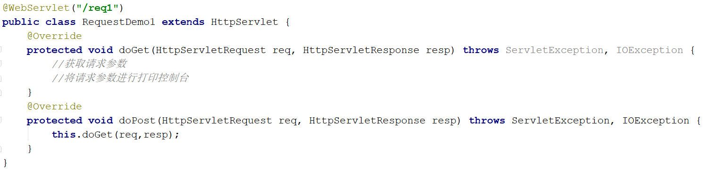
当然，也可以在doGet中调用doPost,在doPost中完成参数的获取和打印,另外需要注意的是，doGet和doPost方法都必须存在，不能删除任意一个。
==GET请求和POST请求获取请求参数的方式不一样，在获取请求参数这块该如何实现呢?==
要想实现，我们就需要==思考==:
GET请求方式和POST请求方式区别主要在于获取请求参数的方式不一样，是否可以提供一种==统一==获取请求参数的方式，从而==统一==doGet和doPost方法内的代码?
解决方案一:
@WebServlet("/req1")
public class RequestDemo1 extends HttpServlet {
@Override
protected void doGet(HttpServletRequest req, HttpServletResponse resp) throws ServletException, IOException {
//获取请求方式
String method = req.getMethod();
//获取请求参数
String params = "";
if("GET".equals(method)){
params = req.getQueryString();
}else if("POST".equals(method)){
BufferedReader reader = req.getReader();
params = reader.readLine();
}
//将请求参数进行打印控制台
System.out.println(params);
}
@Override
protected void doPost(HttpServletRequest req, HttpServletResponse resp) throws ServletException, IOException {
this.doGet(req,resp);
}
}使用request的getMethod()来获取请求方式，根据请求方式的不同分别获取请求参数值，这样就可以解决上述问题，但是以后每个Servlet都需要这样写代码，实现起来比较麻烦，这种方案我们不采用
解决方案二:
request对象已经将上述获取请求参数的方法进行了封装，并且request提供的方法实现的功能更强大，以后只需要调用request提供的方法即可，在request的方法中都实现了哪些操作?
(1)根据不同的请求方式获取请求参数，获取的内容如下:

(2)把获取到的内容进行分割，内容如下:

(3)把分割后端数据，存入到一个Map集合中:

注意:因为参数的值可能是一个，也可能有多个，所以Map的值的类型为String数组。
基于上述理论，request对象为我们提供了如下方法:
- 获取所有参数Map集合
Map<String,String[]> getParameterMap()- 根据名称获取参数值（数组）
String[] getParameterValues(String name)- 根据名称获取参数值(单个值)
String getParameter(String name)接下来，我们通过案例来把上述的三个方法进行实例演示:
1.修改req.html页面，添加爱好选项，爱好可以同时选多个
<!DOCTYPE html>
<html lang="en">
<head>
<meta charset="UTF-8">
<title>Title</title>
</head>
<body>
<form action="/request-demo/req2" method="get">
<input type="text" name="username"><br>
<input type="password" name="password"><br>
<input type="checkbox" name="hobby" value="1"> 游泳
<input type="checkbox" name="hobby" value="2"> 爬山 <br>
<input type="submit">
</form>
</body>
</html>
2.在Servlet代码中获取页面传递GET请求的参数值
2.1获取GET方式的所有请求参数
/**
* request 通用方式获取请求参数
*/
@WebServlet("/req2")
public class RequestDemo2 extends HttpServlet {
@Override
protected void doGet(HttpServletRequest req, HttpServletResponse resp) throws ServletException, IOException {
//GET请求逻辑
System.out.println("get....");
//1. 获取所有参数的Map集合
Map<String, String[]> map = req.getParameterMap();
for (String key : map.keySet()) {
// username:zhangsan lisi
System.out.print(key+":");
//获取值
String[] values = map.get(key);
for (String value : values) {
System.out.print(value + " ");
}
System.out.println();
}
}
@Override
protected void doPost(HttpServletRequest req, HttpServletResponse resp) throws ServletException, IOException {
}
}获取的结果为:

2.2获取GET请求参数中的爱好，结果是数组值
/**
* request 通用方式获取请求参数
*/
@WebServlet("/req2")
public class RequestDemo2 extends HttpServlet {
@Override
protected void doGet(HttpServletRequest req, HttpServletResponse resp) throws ServletException, IOException {
//GET请求逻辑
//...
System.out.println("------------");
String[] hobbies = req.getParameterValues("hobby");
for (String hobby : hobbies) {
System.out.println(hobby);
}
}
@Override
protected void doPost(HttpServletRequest req, HttpServletResponse resp) throws ServletException, IOException {
}
}获取的结果为:
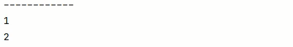
2.3获取GET请求参数中的用户名和密码，结果是单个值
/**
* request 通用方式获取请求参数
*/
@WebServlet("/req2")
public class RequestDemo2 extends HttpServlet {
@Override
protected void doGet(HttpServletRequest req, HttpServletResponse resp) throws ServletException, IOException {
//GET请求逻辑
//...
String username = req.getParameter("username");
String password = req.getParameter("password");
System.out.println(username);
System.out.println(password);
}
@Override
protected void doPost(HttpServletRequest req, HttpServletResponse resp) throws ServletException, IOException {
}
}获取的结果为:
3.在Servlet代码中获取页面传递POST请求的参数值
3.1将req.html页面form表单的提交方式改成post
3.2将doGet方法中的内容复制到doPost方法中即可
小结
req.getParameter()方法使用的频率会比较高
以后我们再写代码的时候，就只需要按照如下格式来编写:
public class RequestDemo1 extends HttpServlet {
@Override
protected void doGet(HttpServletRequest req, HttpServletResponse resp) throws ServletException, IOException {
//采用request提供的获取请求参数的通用方式来获取请求参数
//编写其他的业务代码...
}
@Override
protected void doPost(HttpServletRequest req, HttpServletResponse resp) throws ServletException, IOException {
this.doGet(req,resp);
}
}2.3 IDEA快速创建Servlet
使用通用方式获取请求参数后，屏蔽了GET和POST的请求方式代码的不同，则代码可以定义如下格式:

由于格式固定，所以我们可以使用IDEA提供的模板来制作一个Servlet的模板，这样我们后期在创建Servlet的时候就会更高效，具体如何实现:
(1)按照自己的需求，修改Servlet创建的模板内容
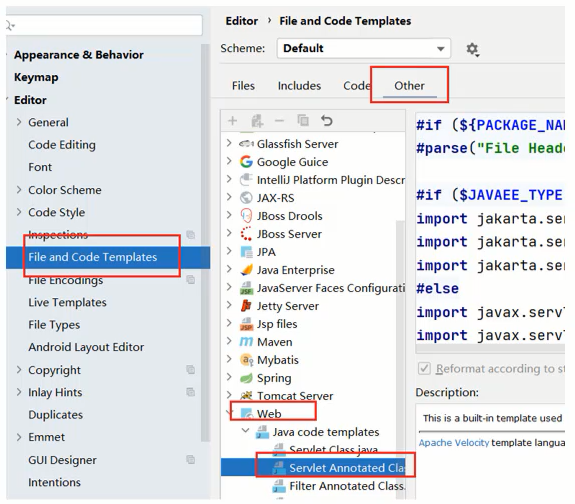
（2）使用servlet模板创建Servlet类

2.4 请求参数中文乱码问题
问题展示:
(1)将req.html页面的请求方式修改为get
<!DOCTYPE html>
<html lang="en">
<head>
<meta charset="UTF-8">
<title>Title</title>
</head>
<body>
<form action="/request-demo/req2" method="get">
<input type="text" name="username"><br>
<input type="password" name="password"><br>
<input type="checkbox" name="hobby" value="1"> 游泳
<input type="checkbox" name="hobby" value="2"> 爬山 <br>
<input type="submit">
</form>
</body>
</html>(2)在Servlet方法中获取参数，并打印
/**
* 中文乱码问题解决方案
*/
@WebServlet("/req4")
public class RequestDemo4 extends HttpServlet {
@Override
protected void doGet(HttpServletRequest request, HttpServletResponse response) throws ServletException, IOException {
//1. 获取username
String username = request.getParameter("username");
System.out.println(username);
}
@Override
protected void doPost(HttpServletRequest request, HttpServletResponse response) throws ServletException, IOException {
this.doGet(request, response);
}
}（3）启动服务器，页面上输入中文参数

（4）查看控制台打印内容
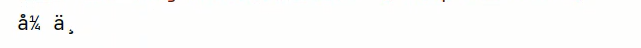
（5）把req.html页面的请求方式改成post,再次发送请求和中文参数
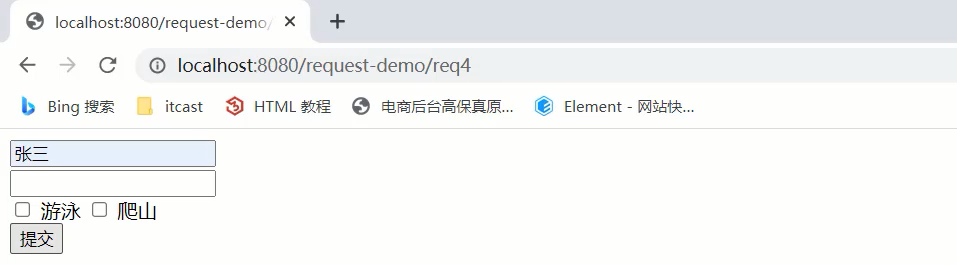
（6）查看控制台打印内容，依然为乱码
通过上面的案例，会发现，不管是GET还是POST请求，在发送的请求参数中如果有中文，在后台接收的时候，都会出现中文乱码的问题。具体该如何解决呢？
2.4.1 POST请求解决方案
- 分析出现中文乱码的原因：
- POST的请求参数是通过request的getReader()来获取流中的数据
- TOMCAT在获取流的时候采用的编码是ISO-8859-1
- ISO-8859-1编码是不支持中文的，所以会出现乱码
- 解决方案：
- 页面设置的编码格式为UTF-8
- 把TOMCAT在获取流数据之前的编码设置为UTF-8
- 通过request.setCharacterEncoding(“UTF-8”)设置编码,UTF-8也可以写成小写
修改后的代码为:
/**
* 中文乱码问题解决方案
*/
@WebServlet("/req4")
public class RequestDemo4 extends HttpServlet {
@Override
protected void doGet(HttpServletRequest request, HttpServletResponse response) throws ServletException, IOException {
//1. 解决乱码: POST getReader()
//设置字符输入流的编码，设置的字符集要和页面保持一致
request.setCharacterEncoding("UTF-8");
//2. 获取username
String username = request.getParameter("username");
System.out.println(username);
}
@Override
protected void doPost(HttpServletRequest request, HttpServletResponse response) throws ServletException, IOException {
this.doGet(request, response);
}
}重新发送POST请求，就会在控制台看到正常展示的中文结果。
至此POST请求中文乱码的问题就已经解决，但是这种方案不适用于GET请求，这个原因是什么呢，咱们下面再分析。
2.4.2 GET请求解决方案
刚才提到一个问题是POST请求的中文乱码解决方案为什么不适用GET请求？
- GET请求获取请求参数的方式是
request.getQueryString() - POST请求获取请求参数的方式是
request.getReader() - request.setCharacterEncoding(“utf-8”)是设置request处理流的编码
- getQueryString方法并没有通过流的方式获取数据
所以GET请求不能用设置编码的方式来解决中文乱码问题，那问题又来了，如何解决GET请求的中文乱码呢?
- 首先我们需要先分析下GET请求出现乱码的原因:

(1)浏览器通过HTTP协议发送请求和数据给后台服务器（Tomcat)
(2)浏览器在发送HTTP的过程中会对中文数据进行URL==编码==
(3)在进行URL编码的时候会采用页面<meta>标签指定的UTF-8的方式进行编码，张三编码后的结果为%E5%BC%A0%E4%B8%89
(4)后台服务器(Tomcat)接收到%E5%BC%A0%E4%B8%89后会默认按照ISO-8859-1进行URL==解码==
(5)由于前后编码与解码采用的格式不一样，就会导致后台获取到的数据为乱码。
思考: 如果把req.html页面的<meta>标签的charset属性改成ISO-8859-1,后台不做操作，能解决中文乱码问题么?
答案是否定的，因为ISO-8859-1本身是不支持中文展示的，所以改了标签的charset属性后，会导致页面上的中文内容都无法正常展示。
分析完上面的问题后，我们会发现，其中有两个我们不熟悉的内容就是==URL编码==和==URL解码==，什么是URL编码，什么又是URL解码呢?
URL编码
这块知识我们只需要了解下即可,具体编码过程分两步，分别是:
(1)将字符串按照编码方式转为二进制
(2)每个字节转为2个16进制数并在前边加上%
张三按照UTF-8的方式转换成二进制的结果为:
1110 0101 1011 1100 1010 0000 1110 0100 1011 1000 1000 1001这个结果是如何计算的?
使用http://www.mytju.com/classcode/tools/encode_utf8.asp，输入张三
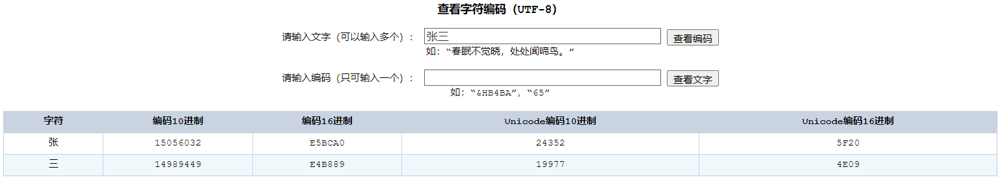
就可以获取张和三分别对应的10进制，然后在使用计算器，选择程序员模式，计算出对应的二进制数据结果:
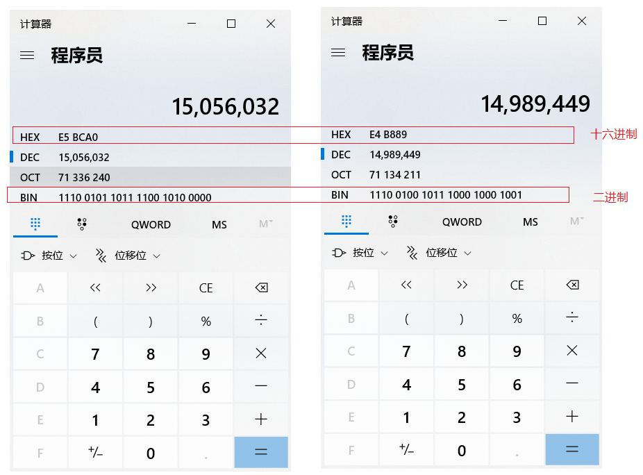
在计算的十六进制结果中，每两位前面加一个%,就可以获取到%E5%BC%A0%E4%B8%89。
当然你从上面所提供的网站中就已经能看到编码16进制的结果了:

但是对于上面的计算过程，如果没有工具，纯手工计算的话，相对来说还是比较复杂的，我们也不需要进行手动计算，在Java中已经为我们提供了编码和解码的API工具类可以让我们更快速的进行编码和解码:
编码:
java.net.URLEncoder.encode("需要被编码的内容","字符集(UTF-8)")解码:
java.net.URLDecoder.decode("需要被解码的内容","字符集(UTF-8)")接下来咱们对张三来进行编码和解码
public class URLDemo {
public static void main(String[] args) throws UnsupportedEncodingException {
String username = "张三";
//1. URL编码
String encode = URLEncoder.encode(username, "utf-8");
System.out.println(encode); //打印:%E5%BC%A0%E4%B8%89
//2. URL解码
//String decode = URLDecoder.decode(encode, "utf-8");//打印:张三
String decode = URLDecoder.decode(encode, "ISO-8859-1");//打印:`å¼ ä¸ `
System.out.println(decode);
}
}
到这，我们就可以分析出GET请求中文参数出现乱码的原因了，
- 浏览器把中文参数按照
UTF-8进行URL编码 - Tomcat对获取到的内容进行了
ISO-8859-1的URL解码 - 在控制台就会出现类上
å¼ ä¸的乱码，最后一位是个空格
- 清楚了出现乱码的原因，接下来我们就需要想办法进行解决
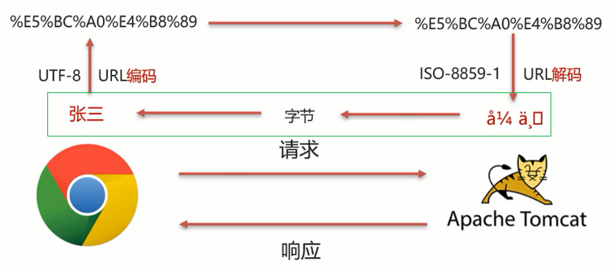
从上图可以看住，
在进行编码和解码的时候，不管使用的是哪个字符集，他们对应的
%E5%BC%A0%E4%B8%89是一致的那他们对应的二进制值也是一样的，为:
1110 0101 1011 1100 1010 0000 1110 0100 1011 1000 1000 1001* 为所以我们可以考虑把`å¼ ä¸`转换成字节，在把字节转换成`张三`，在转换的过程中是它们的编码一致，就可以解决中文乱码问题。 具体的实现步骤为: >1.按照ISO-8859-1编码获取乱码`å¼ ä¸`对应的字节数组 > >2.按照UTF-8编码获取字节数组对应的字符串 实现代码如下:
public class URLDemo {
public static void main(String[] args) throws UnsupportedEncodingException {
String username = “张三”;
//1. URL编码
String encode = URLEncoder.encode(username, “utf-8”);
System.out.println(encode);
//2. URL解码
String decode = URLDecoder.decode(encode, “ISO-8859-1”);
System.out.println(decode); //此处打印的是对应的乱码数据
//3. 转换为字节数据,编码
byte[] bytes = decode.getBytes("ISO-8859-1");
for (byte b : bytes) {
System.out.print(b + " ");
}
//此处打印的是:-27 -68 -96 -28 -72 -119
//4. 将字节数组转为字符串，解码
String s = new String(bytes, "utf-8");
System.out.println(s); //此处打印的是张三
}
}
**说明**:在第18行中打印的数据是`-27 -68 -96 -28 -72 -119`和`张三`转换成的二进制数据`1110 0101 1011 1100 1010 0000 1110 0100 1011 1000 1000 1001`为什么不一样呢？
其实打印出来的是十进制数据，我们只需要使用计算机换算下就能得到他们的对应关系，如下图:

至此对于GET请求中文乱码的解决方案，我们就已经分析完了，最后在代码中去实现下:
```java
/**
* 中文乱码问题解决方案
*/
@WebServlet("/req4")
public class RequestDemo4 extends HttpServlet {
@Override
protected void doGet(HttpServletRequest request, HttpServletResponse response) throws ServletException, IOException {
//1. 解决乱码：POST，getReader()
//request.setCharacterEncoding("UTF-8");//设置字符输入流的编码
//2. 获取username
String username = request.getParameter("username");
System.out.println("解决乱码前："+username);
//3. GET,获取参数的方式：getQueryString
// 乱码原因：tomcat进行URL解码，默认的字符集ISO-8859-1
/* //3.1 先对乱码数据进行编码：转为字节数组
byte[] bytes = username.getBytes(StandardCharsets.ISO_8859_1);
//3.2 字节数组解码
username = new String(bytes, StandardCharsets.UTF_8);*/
username = new String(username.getBytes(StandardCharsets.ISO_8859_1),StandardCharsets.UTF_8);
System.out.println("解决乱码后："+username);
}
@Override
protected void doPost(HttpServletRequest request, HttpServletResponse response) throws ServletException, IOException {
this.doGet(request, response);
}
}注意
- 把
request.setCharacterEncoding("UTF-8")代码注释掉后，会发现GET请求参数乱码解决方案同时也可也把POST请求参数乱码的问题也解决了 - 只不过对于POST请求参数一般都会比较多，采用这种方式解决乱码起来比较麻烦，所以对于POST请求还是建议使用设置编码的方式进行。
另外需要说明一点的是==Tomcat8.0之后，已将GET请求乱码问题解决，设置默认的解码方式为UTF-8==
小结
- 中文乱码解决方案
POST请求和GET请求的参数中如果有中文，后台接收数据就会出现中文乱码问题
GET请求在Tomcat8.0以后的版本就不会出现了
POST请求解决方案是:设置输入流的编码
request.setCharacterEncoding("UTF-8"); 注意:设置的字符集要和页面保持一致通用方式（GET/POST）：需要先解码，再编码
new String(username.getBytes("ISO-8859-1"),"UTF-8");
- URL编码实现方式:
编码:
URLEncoder.encode(str,"UTF-8");解码:
URLDecoder.decode(s,"ISO-8859-1");
2.5 Request请求转发
- ==请求转发(forward):一种在服务器内部的资源跳转方式。==

(1)浏览器发送请求给服务器，服务器中对应的资源A接收到请求
(2)资源A处理完请求后将请求发给资源B
(3)资源B处理完后将结果响应给浏览器
(4)请求从资源A到资源B的过程就叫==请求转发==
- 请求转发的实现方式:
req.getRequestDispatcher("资源B路径").forward(req,resp);具体如何来使用，我们先来看下需求:

针对上述需求，具体的实现步骤为:
1.创建一个RequestDemo5类，接收/req5的请求，在doGet方法中打印
demo52.创建一个RequestDemo6类，接收/req6的请求，在doGet方法中打印
demo63.在RequestDemo5的方法中使用
req.getRequestDispatcher(“/req6”).forward(req,resp)进行请求转发
4.启动测试
(1)创建RequestDemo5类
/**
* 请求转发
*/
@WebServlet("/req5")
public class RequestDemo5 extends HttpServlet {
@Override
protected void doGet(HttpServletRequest request, HttpServletResponse response) throws ServletException, IOException {
System.out.println("demo5...");
}
@Override
protected void doPost(HttpServletRequest request, HttpServletResponse response) throws ServletException, IOException {
this.doGet(request, response);
}
}(2)创建RequestDemo6类
/**
* 请求转发
*/
@WebServlet("/req6")
public class RequestDemo6 extends HttpServlet {
@Override
protected void doGet(HttpServletRequest request, HttpServletResponse response) throws ServletException, IOException {
System.out.println("demo6...");
}
@Override
protected void doPost(HttpServletRequest request, HttpServletResponse response) throws ServletException, IOException {
this.doGet(request, response);
}
}(3)在RequestDemo5的doGet方法中进行请求转发
/**
* 请求转发
*/
@WebServlet("/req5")
public class RequestDemo5 extends HttpServlet {
@Override
protected void doGet(HttpServletRequest request, HttpServletResponse response) throws ServletException, IOException {
System.out.println("demo5...");
//请求转发
request.getRequestDispatcher("/req6").forward(request,response);
}
@Override
protected void doPost(HttpServletRequest request, HttpServletResponse response) throws ServletException, IOException {
this.doGet(request, response);
}
}(4)启动测试
访问http://localhost:8080/request-demo/req5,就可以在控制台看到如下内容:
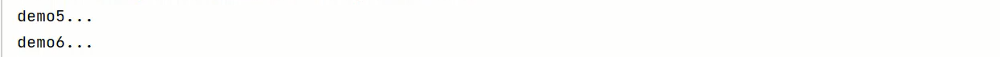
说明请求已经转发到了/req6
- 请求转发资源间共享数据:使用Request对象
此处主要解决的问题是把请求从/req5转发到/req6的时候，如何传递数据给/req6。
需要使用request对象提供的三个方法:
- 存储数据到request域[范围,数据是存储在request对象]中
void setAttribute(String name,Object o);- 根据key获取值
Object getAttribute(String name);- 根据key删除该键值对
void removeAttribute(String name);接着上个需求来:

1.在RequestDemo5的doGet方法中转发请求之前，将数据存入request域对象中
2.在RequestDemo6的doGet方法从request域对象中获取数据，并将数据打印到控制台
3.启动访问测试
(1)修改RequestDemo5中的方法
@WebServlet("/req5")
public class RequestDemo5 extends HttpServlet {
@Override
protected void doGet(HttpServletRequest request, HttpServletResponse response) throws ServletException, IOException {
System.out.println("demo5...");
//存储数据
request.setAttribute("msg","hello");
//请求转发
request.getRequestDispatcher("/req6").forward(request,response);
}
@Override
protected void doPost(HttpServletRequest request, HttpServletResponse response) throws ServletException, IOException {
this.doGet(request, response);
}
}(2)修改RequestDemo6中的方法
/**
* 请求转发
*/
@WebServlet("/req6")
public class RequestDemo6 extends HttpServlet {
@Override
protected void doGet(HttpServletRequest request, HttpServletResponse response) throws ServletException, IOException {
System.out.println("demo6...");
//获取数据
Object msg = request.getAttribute("msg");
System.out.println(msg);
}
@Override
protected void doPost(HttpServletRequest request, HttpServletResponse response) throws ServletException, IOException {
this.doGet(request, response);
}
}(3)启动测试
访问http://localhost:8080/request-demo/req5,就可以在控制台看到如下内容:
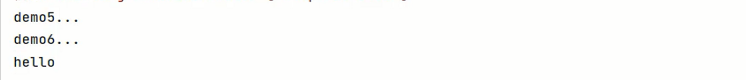
此时就可以实现在转发多个资源之间共享数据。
- 请求转发的特点
浏览器地址栏路径不发生变化
虽然后台从
/req5转发到/req6,但是浏览器的地址一直是/req5,未发生变化
只能转发到当前服务器的内部资源
不能从一个服务器通过转发访问另一台服务器
一次请求，可以在转发资源间使用request共享数据
虽然后台从
/req5转发到/req6，但是这个==只有一次请求==
3. Response对象
前面讲解完Request对象，接下来我们回到刚开始的那张图:

- Request:使用request对象来==获取==请求数据
- Response:使用response对象来==设置==响应数据
Reponse的继承体系和Request的继承体系也非常相似:

介绍完Response的相关体系结构后，接下来对于Response我们需要学习如下内容:
- Response设置响应数据的功能介绍
- Response完成重定向
- Response响应字符数据
- Response响应字节数据
3.1 Response设置响应数据功能介绍
HTTP响应数据总共分为三部分内容，分别是==响应行、响应头、响应体==，对于这三部分内容的数据，respone对象都提供了哪些方法来进行设置?
- 响应行

对于响应头，比较常用的就是设置响应状态码:
void setStatus(int sc);- 响应头
设置响应头键值对：
void setHeader(String name,String value);- 响应体

对于响应体，是通过字符、字节输出流的方式往浏览器写，
获取字符输出流:
PrintWriter getWriter();获取字节输出流
ServletOutputStream getOutputStream();介绍完这些方法后，后面我们会通过案例把这些方法都用一用，首先先来完成下重定向的功能开发。
3.2 Response请求重定向
- ==Response重定向(redirect):一种资源跳转方式。==

(1)浏览器发送请求给服务器，服务器中对应的资源A接收到请求
(2)资源A现在无法处理该请求，就会给浏览器响应一个302的状态码+location的一个访问资源B的路径
(3)浏览器接收到响应状态码为302就会重新发送请求到location对应的访问地址去访问资源B
(4)资源B接收到请求后进行处理并最终给浏览器响应结果，这整个过程就叫==重定向==
- 重定向的实现方式:
resp.setStatus(302);
resp.setHeader("location","资源B的访问路径");具体如何来使用，我们先来看下需求:
针对上述需求，具体的实现步骤为:
1.创建一个ResponseDemo1类，接收/resp1的请求，在doGet方法中打印
resp1....2.创建一个ResponseDemo2类，接收/resp2的请求，在doGet方法中打印
resp2....3.在ResponseDemo1的方法中使用
response.setStatus(302);
response.setHeader(“Location”,”/request-demo/resp2”) 来给前端响应结果数据
4.启动测试
(1)创建ResponseDemo1类
@WebServlet("/resp1")
public class ResponseDemo1 extends HttpServlet {
@Override
protected void doGet(HttpServletRequest request, HttpServletResponse response) throws ServletException, IOException {
System.out.println("resp1....");
}
@Override
protected void doPost(HttpServletRequest request, HttpServletResponse response) throws ServletException, IOException {
this.doGet(request, response);
}
}(2)创建ResponseDemo2类
@WebServlet("/resp2")
public class ResponseDemo2 extends HttpServlet {
@Override
protected void doGet(HttpServletRequest request, HttpServletResponse response) throws ServletException, IOException {
System.out.println("resp2....");
}
@Override
protected void doPost(HttpServletRequest request, HttpServletResponse response) throws ServletException, IOException {
this.doGet(request, response);
}
}(3)在ResponseDemo1的doGet方法中给前端响应数据
@WebServlet("/resp1")
public class ResponseDemo1 extends HttpServlet {
@Override
protected void doGet(HttpServletRequest request, HttpServletResponse response) throws ServletException, IOException {
System.out.println("resp1....");
//重定向
//1.设置响应状态码 302
response.setStatus(302);
//2. 设置响应头 Location
response.setHeader("Location","/request-demo/resp2");
}
@Override
protected void doPost(HttpServletRequest request, HttpServletResponse response) throws ServletException, IOException {
this.doGet(request, response);
}
}(4)启动测试
访问http://localhost:8080/request-demo/resp1,就可以在控制台看到如下内容:

说明/resp1和/resp2都被访问到了。到这重定向就已经完成了。
虽然功能已经实现，但是从设置重定向的两行代码来看，会发现除了重定向的地址不一样，其他的内容都是一模一样，所以request对象给我们提供了简化的编写方式为:
resposne.sendRedirect("/request-demo/resp2")所以第3步中的代码就可以简化为：
@WebServlet("/resp1")
public class ResponseDemo1 extends HttpServlet {
@Override
protected void doGet(HttpServletRequest request, HttpServletResponse response) throws ServletException, IOException {
System.out.println("resp1....");
//重定向
resposne.sendRedirect("/request-demo/resp2")；
}
@Override
protected void doPost(HttpServletRequest request, HttpServletResponse response) throws ServletException, IOException {
this.doGet(request, response);
}
}- 重定向的特点
浏览器地址栏路径发送变化
当进行重定向访问的时候，由于是由浏览器发送的两次请求，所以地址会发生变化

可以重定向到任何位置的资源(服务内容、外部均可)
因为第一次响应结果中包含了浏览器下次要跳转的路径，所以这个路径是可以任意位置资源。
两次请求，不能在多个资源使用request共享数据
因为浏览器发送了两次请求，是两个不同的request对象，就无法通过request对象进行共享数据
介绍完==请求重定向==和==请求转发==以后，接下来需要把这两个放在一块对比下:
以后到底用哪个，还是需要根据具体的业务来决定。
3.3 路径问题
- 问题1：转发的时候路径上没有加
/request-demo而重定向加了，那么到底什么时候需要加，什么时候不需要加呢?

其实判断的依据很简单，只需要记住下面的规则即可:
- 浏览器使用:需要加虚拟目录(项目访问路径)
- 服务端使用:不需要加虚拟目录
对于转发来说，因为是在服务端进行的，所以不需要加虚拟目录
对于重定向来说，路径最终是由浏览器来发送请求，就需要添加虚拟目录。
掌握了这个规则，接下来就通过一些练习来强化下知识的学习:
<a href='路劲'><form action='路径'>- req.getRequestDispatcher(“路径”)
- resp.sendRedirect(“路径”)
答案:
1.超链接，从浏览器发送，需要加
2.表单，从浏览器发送，需要加
3.转发，是从服务器内部跳转，不需要加
4.重定向，是由浏览器进行跳转，需要加。- 问题2：在重定向的代码中，
/request-demo是固定编码的，如果后期通过Tomcat插件配置了项目的访问路径，那么所有需要重定向的地方都需要重新修改，该如何优化?
答案也比较简单，我们可以在代码中动态去获取项目访问的虚拟目录，具体如何获取，我们可以借助前面咱们所学习的request对象中的getContextPath()方法，修改后的代码如下:
@WebServlet("/resp1")
public class ResponseDemo1 extends HttpServlet {
@Override
protected void doGet(HttpServletRequest request, HttpServletResponse response) throws ServletException, IOException {
System.out.println("resp1....");
//简化方式完成重定向
//动态获取虚拟目录
String contextPath = request.getContextPath();
response.sendRedirect(contextPath+"/resp2");
}
@Override
protected void doPost(HttpServletRequest request, HttpServletResponse response) throws ServletException, IOException {
this.doGet(request, response);
}
}重新启动访问测试，功能依然能够实现，此时就可以动态获取项目访问的虚拟路径，从而降低代码的耦合度。
3.4 Response响应字符数据
要想将字符数据写回到浏览器，我们需要两个步骤:
通过Response对象获取字符输出流： PrintWriter writer = resp.getWriter();
通过字符输出流写数据: writer.write(“aaa”);
接下来，我们实现通过些案例把响应字符数据给实际应用下:
- 返回一个简单的字符串
aaa
/**
* 响应字符数据：设置字符数据的响应体
*/
@WebServlet("/resp3")
public class ResponseDemo3 extends HttpServlet {
@Override
protected void doGet(HttpServletRequest request, HttpServletResponse response) throws ServletException, IOException {
response.setContentType("text/html;charset=utf-8");
//1. 获取字符输出流
PrintWriter writer = response.getWriter();
writer.write("aaa");
}
@Override
protected void doPost(HttpServletRequest request, HttpServletResponse response) throws ServletException, IOException {
this.doGet(request, response);
}
}
- 返回一串html字符串，并且能被浏览器解析
PrintWriter writer = response.getWriter();
//content-type，告诉浏览器返回的数据类型是HTML类型数据，这样浏览器才会解析HTML标签
response.setHeader("content-type","text/html");
writer.write("<h1>aaa</h1>");
==注意:==一次请求响应结束后，response对象就会被销毁掉，所以不要手动关闭流。
- 返回一个中文的字符串
你好，需要注意设置响应数据的编码为utf-8
//设置响应的数据格式及数据的编码
response.setContentType("text/html;charset=utf-8");
writer.write("你好");3.5 Response响应字节数据
要想将字节数据写回到浏览器，我们需要两个步骤:
通过Response对象获取字节输出流：ServletOutputStream outputStream = resp.getOutputStream();
通过字节输出流写数据: outputStream.write(字节数据);
接下来，我们实现通过些案例把响应字符数据给实际应用下:
- 返回一个图片文件到浏览器
/**
* 响应字节数据：设置字节数据的响应体
*/
@WebServlet("/resp4")
public class ResponseDemo4 extends HttpServlet {
@Override
protected void doGet(HttpServletRequest request, HttpServletResponse response) throws ServletException, IOException {
//1. 读取文件
FileInputStream fis = new FileInputStream("d://a.jpg");
//2. 获取response字节输出流
ServletOutputStream os = response.getOutputStream();
//3. 完成流的copy
byte[] buff = new byte[1024];
int len = 0;
while ((len = fis.read(buff))!= -1){
os.write(buff,0,len);
}
fis.close();
}
@Override
protected void doPost(HttpServletRequest request, HttpServletResponse response) throws ServletException, IOException {
this.doGet(request, response);
}
}
上述代码中，对于流的copy的代码还是比较复杂的，所以我们可以使用别人提供好的方法来简化代码的开发，具体的步骤是:
(1)pom.xml添加依赖
<dependency>
<groupId>commons-io</groupId>
<artifactId>commons-io</artifactId>
<version>2.6</version>
</dependency>(2)调用工具类方法
//fis:输入流
//os:输出流
IOUtils.copy(fis,os);优化后的代码:
/**
* 响应字节数据：设置字节数据的响应体
*/
@WebServlet("/resp4")
public class ResponseDemo4 extends HttpServlet {
@Override
protected void doGet(HttpServletRequest request, HttpServletResponse response) throws ServletException, IOException {
//1. 读取文件
FileInputStream fis = new FileInputStream("d://a.jpg");
//2. 获取response字节输出流
ServletOutputStream os = response.getOutputStream();
//3. 完成流的copy
IOUtils.copy(fis,os);
fis.close();
}
@Override
protected void doPost(HttpServletRequest request, HttpServletResponse response) throws ServletException, IOException {
this.doGet(request, response);
}
}4. 用户注册登录案例
接下来我们通过两个比较常见的案例，一个是==注册==，一个是==登录==来对今天学习的内容进行一个实战演练，首先来实现用户登录。
4.1 用户登录
4.1.1 需求分析

- 用户在登录页面输入用户名和密码，提交请求给LoginServlet
- 在LoginServlet中接收请求和数据[用户名和密码]
- 在LoginServlt中通过Mybatis实现调用UserMapper来根据用户名和密码查询数据库表
- 将查询的结果封装到User对象中进行返回
- 在LoginServlet中判断返回的User对象是否为null
- 如果为nul，说明根据用户名和密码没有查询到用户，则登录失败，返回”登录失败”数据给前端
- 如果不为null,则说明用户存在并且密码正确，则登录成功，返回”登录成功”数据给前端
4.1.2 环境准备
- 复制资料中的静态页面到项目的webapp目录下
参考资料\1. 登陆注册案例\1. 静态页面,拷贝完效果如下:

- 创建db1数据库，创建tb_user表，创建User实体类
2.1 将资料\1. 登陆注册案例\2. MyBatis环境\tb_user.sql中的sql语句执行下:
2.2 将资料\1. 登陆注册案例\2. MyBatis环境\User.java拷贝到com.itheima.pojo
- 在项目的pom.xml导入Mybatis和Mysql驱动坐标
<dependency>
<groupId>org.mybatis</groupId>
<artifactId>mybatis</artifactId>
<version>3.5.5</version>
</dependency>
<dependency>
<groupId>mysql</groupId>
<artifactId>mysql-connector-java</artifactId>
<version>5.1.34</version>
</dependency>- 创建mybatis-config.xml核心配置文件，UserMapper.xml映射文件,UserMapper接口
4.1 将资料\1. 登陆注册案例\2. MyBatis环境\mybatis-config.xml拷贝到resources目录下
<?xml version="1.0" encoding="UTF-8" ?>
<!DOCTYPE configuration
PUBLIC "-//mybatis.org//DTD Config 3.0//EN"
"http://mybatis.org/dtd/mybatis-3-config.dtd">
<configuration>
<!--起别名-->
<typeAliases>
<package name="com.itheima.pojo"/>
</typeAliases>
<environments default="development">
<environment id="development">
<transactionManager type="JDBC"/>
<dataSource type="POOLED">
<property name="driver" value="com.mysql.jdbc.Driver"/>
<!--
useSSL:关闭SSL安全连接 性能更高
useServerPrepStmts:开启预编译功能
& 等同于 & ,xml配置文件中不能直接写 &符号
-->
<property name="url" value="jdbc:mysql:///db1?useSSL=false&useServerPrepStmts=true"/>
<property name="username" value="root"/>
<property name="password" value="1234"/>
</dataSource>
</environment>
</environments>
<mappers>
<!--扫描mapper-->
<package name="com.itheima.mapper"/>
</mappers>
</configuration>4.2 在com.itheima.mapper包下创建UserMapper接口
public interface UserMapper {
}4.3 将资料\1. 登陆注册案例\2. MyBatis环境\UserMapper.xml拷贝到resources目录下
==注意：在resources下创建UserMapper.xml的目录时，要使用/分割==

至此我们所需要的环境就都已经准备好了，具体该如何实现?
4.1.3 代码实现
- 在UserMapper接口中提供一个根据用户名和密码查询用户对象的方法
/**
* 根据用户名和密码查询用户对象
* @param username
* @param password
* @return
*/
@Select("select * from tb_user where username = #{username} and password = #{password}")
User select(@Param("username") String username,@Param("password") String password);说明
@Param注解的作用:用于传递参数,是方法的参数可以与SQL中的字段名相对应。
- 修改loign.html
<!DOCTYPE html>
<html lang="en">
<head>
<meta charset="UTF-8">
<title>login</title>
<link href="css/login.css" rel="stylesheet">
</head>
<body>
<div id="loginDiv">
<form action="/request-demo/loginServlet" method="post" id="form">
<h1 id="loginMsg">LOGIN IN</h1>
<p>Username:<input id="username" name="username" type="text"></p>
<p>Password:<input id="password" name="password" type="password"></p>
<div id="subDiv">
<input type="submit" class="button" value="login up">
<input type="reset" class="button" value="reset">
<a href="register.html">没有账号？点击注册</a>
</div>
</form>
</div>
</body>
</html>- 编写LoginServlet
@WebServlet("/loginServlet")
public class LoginServlet extends HttpServlet {
@Override
protected void doGet(HttpServletRequest request, HttpServletResponse response) throws ServletException, IOException {
//1. 接收用户名和密码
String username = request.getParameter("username");
String password = request.getParameter("password");
//2. 调用MyBatis完成查询
//2.1 获取SqlSessionFactory对象
String resource = "mybatis-config.xml";
InputStream inputStream = Resources.getResourceAsStream(resource);
SqlSessionFactory sqlSessionFactory = new SqlSessionFactoryBuilder().build(inputStream);
//2.2 获取SqlSession对象
SqlSession sqlSession = sqlSessionFactory.openSession();
//2.3 获取Mapper
UserMapper userMapper = sqlSession.getMapper(UserMapper.class);
//2.4 调用方法
User user = userMapper.select(username, password);
//2.5 释放资源
sqlSession.close();
//获取字符输出流，并设置content type
response.setContentType("text/html;charset=utf-8");
PrintWriter writer = response.getWriter();
//3. 判断user释放为null
if(user != null){
// 登陆成功
writer.write("登陆成功");
}else {
// 登陆失败
writer.write("登陆失败");
}
}
@Override
protected void doPost(HttpServletRequest request, HttpServletResponse response) throws ServletException, IOException {
this.doGet(request, response);
}
}- 启动服务器测试
4.1 如果用户名和密码输入错误，则
4.2 如果用户名和密码输入正确，则

至此用户的登录功能就已经完成了~
4.2 用户注册
4.2.1 需求分析

- 用户在注册页面输入用户名和密码，提交请求给RegisterServlet
- 在RegisterServlet中接收请求和数据[用户名和密码]
- 在RegisterServlet中通过Mybatis实现调用UserMapper来根据用户名查询数据库表
- 将查询的结果封装到User对象中进行返回
- 在RegisterServlet中判断返回的User对象是否为null
- 如果为nul，说明根据用户名可用，则调用UserMapper来实现添加用户
- 如果不为null,则说明用户不可以，返回”用户名已存在”数据给前端
4.2.2 代码编写
- 编写UserMapper提供根据用户名查询用户数据方法和添加用户方法
/**
* 根据用户名查询用户对象
* @param username
* @return
*/
@Select("select * from tb_user where username = #{username}")
User selectByUsername(String username);
/**
* 添加用户
* @param user
*/
@Insert("insert into tb_user values(null,#{username},#{password})")
void add(User user);- 修改register.html
<!DOCTYPE html>
<html lang="en">
<head>
<meta charset="UTF-8">
<title>欢迎注册</title>
<link href="css/register.css" rel="stylesheet">
</head>
<body>
<div class="form-div">
<div class="reg-content">
<h1>欢迎注册</h1>
<span>已有帐号？</span> <a href="login.html">登录</a>
</div>
<form id="reg-form" action="/request-demo/registerServlet" method="post">
<table>
<tr>
<td>用户名</td>
<td class="inputs">
<input name="username" type="text" id="username">
<br>
<span id="username_err" class="err_msg" style="display: none">用户名不太受欢迎</span>
</td>
</tr>
<tr>
<td>密码</td>
<td class="inputs">
<input name="password" type="password" id="password">
<br>
<span id="password_err" class="err_msg" style="display: none">密码格式有误</span>
</td>
</tr>
</table>
<div class="buttons">
<input value="注 册" type="submit" id="reg_btn">
</div>
<br class="clear">
</form>
</div>
</body>
</html>- 创建RegisterServlet类
@WebServlet("/registerServlet")
public class RegisterServlet extends HttpServlet {
@Override
protected void doGet(HttpServletRequest request, HttpServletResponse response) throws ServletException, IOException {
//1. 接收用户数据
String username = request.getParameter("username");
String password = request.getParameter("password");
//封装用户对象
User user = new User();
user.setUsername(username);
user.setPassword(password);
//2. 调用mapper 根据用户名查询用户对象
//2.1 获取SqlSessionFactory对象
String resource = "mybatis-config.xml";
InputStream inputStream = Resources.getResourceAsStream(resource);
SqlSessionFactory sqlSessionFactory = new SqlSessionFactoryBuilder().build(inputStream);
//2.2 获取SqlSession对象
SqlSession sqlSession = sqlSessionFactory.openSession();
//2.3 获取Mapper
UserMapper userMapper = sqlSession.getMapper(UserMapper.class);
//2.4 调用方法
User u = userMapper.selectByUsername(username);
//3. 判断用户对象释放为null
if( u == null){
// 用户名不存在，添加用户
userMapper.add(user);
// 提交事务
sqlSession.commit();
// 释放资源
sqlSession.close();
}else {
// 用户名存在，给出提示信息
response.setContentType("text/html;charset=utf-8");
response.getWriter().write("用户名已存在");
}
}
@Override
protected void doPost(HttpServletRequest request, HttpServletResponse response) throws ServletException, IOException {
this.doGet(request, response);
}
}- 启动服务器进行测试
4.1 如果测试成功，则在数据库中就能查看到新注册的数据
4.2 如果用户已经存在，则在页面上展示 用户名已存在 的提示信息
4.3 SqlSessionFactory工具类抽取
上面两个功能已经实现，但是在写Servlet的时候，因为需要使用Mybatis来完成数据库的操作，所以对于Mybatis的基础操作就出现了些重复代码，如下
String resource = "mybatis-config.xml";
InputStream inputStream = Resources.getResourceAsStream(resource);
SqlSessionFactory sqlSessionFactory = new
SqlSessionFactoryBuilder().build(inputStream);有了这些重复代码就会造成一些问题:
- 重复代码不利于后期的维护
- SqlSessionFactory工厂类进行重复创建
- 就相当于每次买手机都需要重新创建一个手机生产工厂来给你制造一个手机一样，资源消耗非常大但性能却非常低。所以这么做是不允许的。
那如何来优化呢？
- 代码重复可以抽取工具类
- 对指定代码只需要执行一次可以使用静态代码块
有了这两个方向后，代码具体该如何编写?
public class SqlSessionFactoryUtils {
private static SqlSessionFactory sqlSessionFactory;
static {
//静态代码块会随着类的加载而自动执行，且只执行一次
try {
String resource = "mybatis-config.xml";
InputStream inputStream = Resources.getResourceAsStream(resource);
sqlSessionFactory = new SqlSessionFactoryBuilder().build(inputStream);
} catch (IOException e) {
e.printStackTrace();
}
}
public static SqlSessionFactory getSqlSessionFactory(){
return sqlSessionFactory;
}
}工具类抽取以后，以后在对Mybatis的SqlSession进行操作的时候，就可以直接使用
SqlSessionFactory sqlSessionFactory =SqlSessionFactoryUtils.getSqlSessionFactory();这样就可以很好的解决上面所说的代码重复和重复创建工厂导致性能低的问题了。